Last updated: 2026-08-25
Checks: 7 0
Knit directory: code/
This reproducible R Markdown analysis was created with workflowr (version 1.7.2). The Checks tab describes the reproducibility checks that were applied when the results were created. The Past versions tab lists the development history.
Great! Since the R Markdown file has been committed to the Git repository, you know the exact version of the code that produced these results.
Great job! The global environment was empty. Objects defined in the global environment can affect the analysis in your R Markdown file in unknown ways. For reproduciblity it’s best to always run the code in an empty environment.
The command set.seed(20260825) was run prior to running
the code in the R Markdown file. Setting a seed ensures that any results
that rely on randomness, e.g. subsampling or permutations, are
reproducible.
Great job! Recording the operating system, R version, and package versions is critical for reproducibility.
Nice! There were no cached chunks for this analysis, so you can be confident that you successfully produced the results during this run.
Great job! Using relative paths to the files within your workflowr project makes it easier to run your code on other machines.
Great! You are using Git for version control. Tracking code development and connecting the code version to the results is critical for reproducibility.
The results in this page were generated with repository version 612022f. See the Past versions tab to see a history of the changes made to the R Markdown and HTML files.
Note that you need to be careful to ensure that all relevant files for
the analysis have been committed to Git prior to generating the results
(you can use wflow_publish or
wflow_git_commit). workflowr only checks the R Markdown
file, but you know if there are other scripts or data files that it
depends on. Below is the status of the Git repository when the results
were generated:
Ignored files:
Ignored: archive/PolII_footprints_code/cluster_footprints_notebooks/.claude/
Untracked files:
Untracked: FIRE_MSP/README.md
Untracked: FIRE_MSP/archive/
Untracked: FIRE_MSP/lizarraga_FIRE
Untracked: RNA/LPS_timecourse_DESeq2_LRT.Rmd
Untracked: RNA/aligned
Untracked: cluster_nuc_methods/
Untracked: clustering_TSS_methods/Leiden_Manhattan/
Untracked: clustering_TSS_methods/hamming_hierarchical/archive/
Unstaged changes:
Modified: FIRE_MSP/fire_codependency.py
Modified: FIRE_MSP/intersect_msp_fire.sh
Deleted: FIRE_MSP/make_gencode_v46_all_tss.sh
Modified: FIRE_MSP/plot_codependency.R
Modified: FIRE_MSP/run_fire_codependency.sh
Deleted: RNA/lima_de_timecourse.Rmd
Modified: clustering_TSS_methods/hamming_hierarchical/hamming_dist_hier.Rmd
Modified: clustering_TSS_methods/hamming_hierarchical/phasing_functions.r
Deleted: clustering_TSS_methods/hamming_hierarchical/quantify_polII_chip.R
Modified: clustering_TSS_methods/spearman_ward_hier/spearman_ward_hier.Rmd
Note that any generated files, e.g. HTML, png, CSS, etc., are not included in this status report because it is ok for generated content to have uncommitted changes.
These are the previous versions of the repository in which changes were
made to the R Markdown
(analysis/LPS_timecourse_DESeq2_LRT.Rmd) and HTML
(docs/LPS_timecourse_DESeq2_LRT.html) files. If you’ve
configured a remote Git repository (see ?wflow_git_remote),
click on the hyperlinks in the table below to view the files as they
were in that past version.
| File | Version | Author | Date | Message |
|---|---|---|---|---|
| Rmd | 612022f | CrystalShann | 2026-08-25 | Publish LPS RNA-seq timecourse analysis |
Point counts_dir at the STAR output folder: it holds
sample_names.txt (the sample sheet) and one subdirectory
per sample containing
<sample>_ReadsPerGene.out.tab.
counts_dir <- "/project/spott/cshan/fiber-seq/code/RNA/aligned"
sheet_path <- file.path(counts_dir, "sample_names.txt")
gtf_path <- "/project/spott/lizarraga/human_references/gencode.v46.annotation.gtf"
out_dir <- "/project/spott/cshan/fiber-seq/macrophage_project/RNA-seq/deseq2_lrt_results"
fig_dir <- "/project/spott/cshan/fiber-seq/macrophage_project/RNA-seq/figures"
strand_col <- 4 # STAR column: 2 = unstranded, 3 = forward, 4 = reverse
fdr_cut <- 0.05
lfc_cut <- 1 # log2FC threshold for the core genes responsive to LPS
dir.create(out_dir, showWarnings = FALSE)
dir.create(fig_dir, showWarnings = FALSE, recursive = TRUE)
# save plots
save_fig <- function(p, name, w, h) {
ggsave(file.path(fig_dir, paste0(name, ".png")), p,
width = w, height = h, dpi = 300)
}suppressPackageStartupMessages({
library(DESeq2)
library(edgeR)
library(splines)
library(ggplot2)
library(ggrepel)
library(pheatmap)
})18 libraries: 6 timepoints (0, 5, 10, 15, 30, 60 min) x 3 replicates,
read from sample_names.txt. Baseline is 0 min
R1/R2/R3 are paired batches present at every timepoint
samples <- read.delim(sheet_path, header = TRUE, stringsAsFactors = FALSE)
colnames(samples) <- c("sample", "replicate", "time")
samples$sample <- trimws(samples$sample)
samples$replicate <- trimws(samples$replicate)
samples$time <- as.numeric(samples$time)
samples <- samples[order(samples$time, samples$replicate), ]
stopifnot(nrow(samples) == 18, !anyDuplicated(samples$sample))
samples$time_f <- factor(samples$time, levels = c(0, 5, 10, 15, 30, 60))
samples$rep <- factor(samples$replicate)
rownames(samples) <- samples$sample
samples sample replicate time time_f rep
SP-AL-18s-R10_S1 SP-AL-18s-R10_S1 R1 0 0 R1
SP-AL-18s-R20_S7 SP-AL-18s-R20_S7 R2 0 0 R2
SP-AL-18s-R30_S13 SP-AL-18s-R30_S13 R3 0 0 R3
SP-AL-18s-R15_S5 SP-AL-18s-R15_S5 R1 5 5 R1
SP-AL-18s-R25_S11 SP-AL-18s-R25_S11 R2 5 5 R2
SP-AL-18s-R35_S17 SP-AL-18s-R35_S17 R3 5 5 R3
SP-AL-18s-R110_S2 SP-AL-18s-R110_S2 R1 10 10 R1
SP-AL-18s-R210_S8 SP-AL-18s-R210_S8 R2 10 10 R2
SP-AL-18s-R310_S14 SP-AL-18s-R310_S14 R3 10 10 R3
SP-AL-18s-R115_S3 SP-AL-18s-R115_S3 R1 15 15 R1
SP-AL-18s-R215_S9 SP-AL-18s-R215_S9 R2 15 15 R2
SP-AL-18s-R315_S15 SP-AL-18s-R315_S15 R3 15 15 R3
SP-AL-18s-R130_S4 SP-AL-18s-R130_S4 R1 30 30 R1
SP-AL-18s-R230_S10 SP-AL-18s-R230_S10 R2 30 30 R2
SP-AL-18s-R330_S16 SP-AL-18s-R330_S16 R3 30 30 R3
SP-AL-18s-R160_S6 SP-AL-18s-R160_S6 R1 60 60 R1
SP-AL-18s-R260_S12 SP-AL-18s-R260_S12 R2 60 60 R2
SP-AL-18s-R360_S18 SP-AL-18s-R360_S18 R3 60 60 R3ReadsPerGene.out.tab has no header and four columns:
gene ID, unstranded, forward, reverse. The first four rows are alignment
summary lines (N_unmapped, N_multimapping,
N_noFeature, N_ambiguous) — kept aside as QC,
not as genes.
read_star <- function(sample, dir, col) {
f <- file.path(dir, sample, paste0(sample, "_ReadsPerGene.out.tab"))
if (!file.exists(f)) stop("missing count file: ", f)
d <- read.delim(f, header = FALSE, row.names = 1,
col.names = c("gene", "unstranded", "fwd", "rev"))
# get the summary stats
list(qc = d[grepl("^N_", rownames(d)), col - 1],
counts = d[!grepl("^N_", rownames(d)), col - 1, drop = TRUE],
genes = rownames(d)[!grepl("^N_", rownames(d))],
# for non summary stats, gets the total number of counts
# stranded
# fwd
# reverse
all3 = colSums(d[!grepl("^N_", rownames(d)), ]))
}
star <- lapply(samples$sample, read_star, dir = counts_dir, col = strand_col)
names(star) <- samples$sample
gene_ids <- star[[1]]$genes
stopifnot(all(vapply(star, function(x) identical(x$genes, gene_ids), logical(1))))
counts <- do.call(cbind, lapply(star, `[[`, "counts"))
rownames(counts) <- gene_ids
colnames(counts) <- samples$sample
cat("genes:", nrow(counts), " samples:", ncol(counts), "\n")genes: 63086 samples: 18 The library is reverse-stranded if column 4 carries far more reads
than column 3. If this comes out the other way round, change
strand_col above and re-run.
s3 <- colSums(do.call(rbind, lapply(star, function(x) x$all3)))
names(s3) <- c("unstranded", "fwd", "rev")
print(round(s3 / 1e6, 1)) # millions of reads per STAR columnunstranded fwd rev
944.3 79.9 997.9 cat("\nchosen column:", strand_col,
"| reverse/forward ratio:", round(s3[["rev"]] / s3[["fwd"]], 1), "\n")
chosen column: 4 | reverse/forward ratio: 12.5 if (s3[["rev"]] < s3[["fwd"]])
warning("Forward strand dominates - strand_col may be wrong.")Takes the qc column in N_unmapped, N_multimapping, N_noFeature, N_ambiguous
qc <- do.call(rbind, lapply(star, function(x) x$qc))
colnames(qc) <- c("N_unmapped", "N_multimapping", "N_noFeature", "N_ambiguous")
qc <- as.data.frame(qc)
# counts how many reads that are
qc$assigned <- colSums(counts)
qc$total <- rowSums(qc[, c(1:4, 5)])
# calculates the percentage of reads that were successfully assigned to genes = 100 x (assigned reads / total reads)
qc$pct_assigned <- round(100 * qc$assigned / qc$total, 1)
# counts how many genes have at least one each in each sample
qc$genes_detect <- colSums(counts > 0)
write.csv(qc, file.path(out_dir, "star_alignment_qc.csv"))
qc[, c("assigned", "pct_assigned", "genes_detect")] assigned pct_assigned genes_detect
SP-AL-18s-R10_S1 66993670 72.9 28925
SP-AL-18s-R20_S7 58347442 69.0 29197
SP-AL-18s-R30_S13 57502710 68.2 29085
SP-AL-18s-R15_S5 55970571 69.0 28677
SP-AL-18s-R25_S11 54813913 69.4 28850
SP-AL-18s-R35_S17 57243810 69.3 28857
SP-AL-18s-R110_S2 56174050 68.8 28432
SP-AL-18s-R210_S8 64439330 70.3 28873
SP-AL-18s-R310_S14 57273210 70.2 28616
SP-AL-18s-R115_S3 61991017 68.7 28886
SP-AL-18s-R215_S9 48443641 69.3 28327
SP-AL-18s-R315_S15 45920908 69.8 27958
SP-AL-18s-R130_S4 56411453 68.6 28253
SP-AL-18s-R230_S10 53780411 70.0 28472
SP-AL-18s-R330_S16 49909059 70.5 28188
SP-AL-18s-R160_S6 52610646 68.3 28395
SP-AL-18s-R260_S12 51745469 71.2 28152
SP-AL-18s-R360_S18 48340986 69.6 28167Builds a gene annotation table for the genes in your RNA-seq count matrix.keeps only gene-level records, extracts each gene’s gene_id, gene_name, and gene_type from the attribute column, matches those annotations back to your count-matrix gene IDs, and reports how many genes were successfully annotate
chr1 HAVANA gene 11869 14409 . + . gene_id “ENSG00000290825.1”; gene_type “lncRNA”; gene_name “DDX11L2”; level 2; tag “overlaps_pseudogene”;
chr1 HAVANA transcript 11869 14409 . + . gene_id “ENSG00000290825.1”; transcript_id “ENST00000456328.2”; gene_type “lncRNA”; gene_name “DDX11L2”; transcript_type “lncRNA”; transcript_name “DDX11L2-202”; level 2; transcript_support_level “1”; tag “basic”; tag “Ensembl_canonical”; havana_transcript “OTTHUMT00000362751.1”;
chr1 HAVANA exon 11869 12227 . + . gene_id “ENSG00000290825.1”; transcript_id “ENST00000456328.2”; gene_type “lncRNA”; gene_name “DDX11L2”; transcript_type “lncRNA”; transcript_name “DDX11L2-202”; exon_number 1; exon_id “ENSE00002234944.1”; level 2; transcript_support_level “1”; tag “basic”; tag “Ensembl_canonical”; havana_transcript “OTTHUMT00000362751.1”;
ann <- data.frame(gene_id = gene_ids, gene_name = NA_character_,
gene_type = NA_character_, row.names = gene_ids,
stringsAsFactors = FALSE)
if (!is.na(gtf_path) && file.exists(gtf_path)) {
con <- if (grepl("\\.gz$", gtf_path)) gzfile(gtf_path) else file(gtf_path)
gtf <- read.delim(con, header = FALSE, comment.char = "#", quote = "",
col.names = c("chr","src","feat","start","end","score","strand","frame","attr"))
gtf <- gtf[gtf$feat == "gene", ]
grab <- function(x, key) {
m <- regmatches(x, regexpr(paste0(key, ' "[^"]*"'), x))
ifelse(length(m) == 0, NA_character_, gsub(paste0(key, ' "|"'), "", m))
}
gid <- vapply(gtf$attr, grab, character(1), key = "gene_id", USE.NAMES = FALSE)
gnm <- vapply(gtf$attr, grab, character(1), key = "gene_name", USE.NAMES = FALSE)
gtp <- vapply(gtf$attr, grab, character(1), key = "gene_type", USE.NAMES = FALSE)
hit <- match(gene_ids, gid)
ann$gene_name <- gnm[hit]
ann$gene_type <- gtp[hit]
cat("annotated", sum(!is.na(ann$gene_name)), "of", nrow(ann), "genes\n")
} else {
message("GTF not found - gene_name/gene_type left blank.")
}annotated 63086 of 63086 geneswrite.csv(ann, file.path(out_dir, "gene_annotation.csv"), row.names = FALSE)filterByExpr is given the full design so it keeps genes
expressed in any timepoint group — important here, because the
interesting genes are off at baseline and on at 60 min.
creates the design matrix: expression ~ replicate + timepoint - Y=β0 +βrep2 + βrep3+ βtime5 + βtime10 +⋯+ϵ - beta = baseline
design_full <- model.matrix(~ rep + time_f, samples)
keep <- filterByExpr(DGEList(counts, samples = samples), design = design_full)
counts_f <- counts[keep, ]
cat("kept", nrow(counts_f), "of", nrow(counts), "genes\n")kept 20230 of 63086 geneswrite.csv(counts_f, file.path(out_dir, "counts_filtered.csv"))
head(counts_f) SP-AL-18s-R10_S1 SP-AL-18s-R20_S7 SP-AL-18s-R30_S13
ENSG00000227232.6 875 1006 906
ENSG00000268903.1 35 28 27
ENSG00000269981.1 27 23 39
ENSG00000241860.7 47 84 91
ENSG00000279457.4 211 305 274
ENSG00000290385.1 42 81 67
SP-AL-18s-R15_S5 SP-AL-18s-R25_S11 SP-AL-18s-R35_S17
ENSG00000227232.6 831 768 823
ENSG00000268903.1 28 22 22
ENSG00000269981.1 30 21 27
ENSG00000241860.7 66 83 84
ENSG00000279457.4 239 261 274
ENSG00000290385.1 62 76 88
SP-AL-18s-R110_S2 SP-AL-18s-R210_S8 SP-AL-18s-R310_S14
ENSG00000227232.6 841 774 735
ENSG00000268903.1 32 37 22
ENSG00000269981.1 27 29 19
ENSG00000241860.7 74 67 67
ENSG00000279457.4 256 182 183
ENSG00000290385.1 52 48 73
SP-AL-18s-R115_S3 SP-AL-18s-R215_S9 SP-AL-18s-R315_S15
ENSG00000227232.6 805 735 661
ENSG00000268903.1 25 19 24
ENSG00000269981.1 36 22 27
ENSG00000241860.7 77 75 53
ENSG00000279457.4 249 229 162
ENSG00000290385.1 80 59 60
SP-AL-18s-R130_S4 SP-AL-18s-R230_S10 SP-AL-18s-R330_S16
ENSG00000227232.6 820 709 679
ENSG00000268903.1 19 25 21
ENSG00000269981.1 17 22 21
ENSG00000241860.7 43 73 62
ENSG00000279457.4 180 198 209
ENSG00000290385.1 46 70 50
SP-AL-18s-R160_S6 SP-AL-18s-R260_S12 SP-AL-18s-R360_S18
ENSG00000227232.6 632 552 494
ENSG00000268903.1 25 18 19
ENSG00000269981.1 19 24 22
ENSG00000241860.7 64 56 49
ENSG00000279457.4 167 129 87
ENSG00000290385.1 68 44 49The LRT compares the full model (~ replicate + time)
against a reduced model with the time term dropped. It answers “does
this gene change anywhere across the course”, which is the
right omnibus question for a time series
The full model includes both replicate and timepoint effects, while the reduced model includes replicate only. The LRT asks whether including time significantly improves the fit, so a significant gene is one whose expression changes at at least one timepoint after accounting for replicate differences.
# fits both full and reduced models internally for each gene and compares them
dds <- DESeqDataSetFromMatrix(counts_f, colData = samples, design = ~ rep + time_f)
dds <- DESeq(dds, test = "LRT", reduced = ~ rep, quiet = TRUE)
# LRT result comparing the two models
## LRT was performed on original negative binomial count model
res <- results(dds)
# variance stabilizing transformation
## Raw RNA-seq counts have mean-dependent variance: highly expressed genes tend to have much larger variance than low-expression genes. VST transforms the counts so that variance is more comparable across the expression range
vsd <- vst(dds, blind = TRUE)
# extract transformed expression value as an ordinary matrix
vmat <- assay(vsd)
write.csv(vmat, file.path(out_dir, "vst_matrix.csv"))
summary(res)
out of 20230 with nonzero total read count
adjusted p-value < 0.1
LFC > 0 (up) : 1505, 7.4%
LFC < 0 (down) : 1070, 5.3%
outliers [1] : 0, 0%
low counts [2] : 0, 0%
(mean count < 3)
[1] see 'cooksCutoff' argument of ?results
[2] see 'independentFiltering' argument of ?resultsresults(dds)log2 fold change (MLE): time f 60 vs 0
LRT p-value: '~ rep + time_f' vs '~ rep'
DataFrame with 20230 rows and 6 columns
baseMean log2FoldChange lfcSE stat pvalue
<numeric> <numeric> <numeric> <numeric> <numeric>
ENSG00000227232.6 749.6500 -0.35447178 0.111382 11.27613 0.04617185
ENSG00000268903.1 24.5928 -0.15072667 0.350593 1.29024 0.93593273
ENSG00000269981.1 24.9189 -0.05751849 0.357310 2.09719 0.83553985
ENSG00000241860.7 67.0775 0.00811378 0.258710 1.62683 0.89798633
ENSG00000279457.4 207.5729 -0.68202097 0.211531 15.67449 0.00783757
... ... ... ... ... ...
ENSG00000198786.2 25970.2036 0.0482011 0.438908 5.49697 0.358279
ENSG00000198695.2 295.0563 -0.3174769 0.585091 2.84253 0.724247
ENSG00000198727.2 10131.5538 0.0743466 0.436317 6.01020 0.305227
ENSG00000210195.2 51.1715 0.2478076 0.332533 7.53168 0.184004
ENSG00000210196.2 89.9264 -0.3466854 0.326212 7.63708 0.177404
padj
<numeric>
ENSG00000227232.6 0.2689480
ENSG00000268903.1 0.9999938
ENSG00000269981.1 0.9999938
ENSG00000241860.7 0.9999938
ENSG00000279457.4 0.0684307
... ...
ENSG00000198786.2 0.878485
ENSG00000198695.2 0.999994
ENSG00000198727.2 0.821110
ENSG00000210195.2 0.644126
ENSG00000210196.2 0.631178takes the overall DESeq2 LRT result and adds timepoint-specific log2 fold changes versus 0 min so that, for each gene, you know both whether it changes anywhere across the time course and how large/directional the change is at 5, 10, 15, 30, and 60 min
baseMean is the average normalized expression level of that gene across all 18 samples. It is based on DESeq2 size-factor-normalized counts, not the raw counts. A large baseMean means the gene is generally highly expressed; a small baseMean means it is lowly expressed. It does not tell you whether the gene changes over time
stat is the likelihood-ratio test statistic for comparing the full model ~ rep + time_f against the reduced model ~ rep. It measures how much better the model fits when the time effect is included
# foe each time point (not including 0 min), extracts DESeq2 log2 fold change coefficient relative to 0 min
lfc <- sapply(c(5, 10, 15, 30, 60), function(t)
results(dds, name = paste0("time_f_", t, "_vs_0"))$log2FoldChange)
colnames(lfc) <- paste0("lfc_", c(5, 10, 15, 30, 60), "_vs_0")
# builds results table with annotations, LRT statistics, all fold changes, and the largest absolute fold change across time
# sorts genes by FDR
# counts how many genes are significant and prints the top genes
lrt_tab <- data.frame(
gene_id = rownames(res),
gene_name = ann[rownames(res), "gene_name"],
gene_type = ann[rownames(res), "gene_type"],
baseMean = round(res$baseMean, 2),
stat = round(res$stat, 3), pvalue = res$pvalue, padj = res$padj,
round(lfc, 3),
# calculates the largest absolute fold change for each gene at any timepoint
max_abs_lfc = round(apply(abs(lfc), 1, max), 3),
row.names = rownames(res), stringsAsFactors = FALSE
)
lrt_tab <- lrt_tab[order(lrt_tab$padj), ]
write.csv(lrt_tab, file.path(out_dir, "deseq2_lrt_timecourse.csv"), row.names = FALSE)
# the most statistically significant time-responsive genes
head(lrt_tab) gene_id gene_name gene_type baseMean stat
ENSG00000184545.11 ENSG00000184545.11 DUSP8 protein_coding 120.74 496.604
ENSG00000166592.13 ENSG00000166592.13 RRAD protein_coding 360.98 453.389
ENSG00000172183.16 ENSG00000172183.16 ISG20 protein_coding 597.77 409.503
ENSG00000099985.4 ENSG00000099985.4 OSM protein_coding 70.04 402.498
ENSG00000124145.6 ENSG00000124145.6 SDC4 protein_coding 6373.93 397.409
ENSG00000172602.11 ENSG00000172602.11 RND1 protein_coding 57.83 376.391
pvalue padj lfc_5_vs_0 lfc_10_vs_0
ENSG00000184545.11 4.317564e-105 8.734431e-101 0.250 0.260
ENSG00000166592.13 9.126994e-96 9.231954e-92 -0.095 0.021
ENSG00000172183.16 2.654158e-86 1.789787e-82 0.079 0.090
ENSG00000099985.4 8.589540e-85 4.344160e-81 0.008 -0.448
ENSG00000124145.6 1.073331e-83 4.342695e-80 0.025 0.117
ENSG00000172602.11 3.626709e-79 1.222805e-75 0.042 -0.321
lfc_15_vs_0 lfc_30_vs_0 lfc_60_vs_0 max_abs_lfc
ENSG00000184545.11 0.382 0.596 3.798 3.798
ENSG00000166592.13 -0.200 0.384 2.588 2.588
ENSG00000172183.16 0.130 0.373 2.324 2.324
ENSG00000099985.4 -0.237 0.511 3.272 3.272
ENSG00000124145.6 -0.028 0.308 1.982 1.982
ENSG00000172602.11 0.869 1.053 4.978 4.978# sigificant time responsive genes with the largest expression changes
lrt_sig <- lrt_tab[lrt_tab$padj < fdr_cut, ]
lrt_sig <- lrt_sig[order(lrt_sig$max_abs_lfc, decreasing = TRUE), ]
head(lrt_sig[, c("gene_name", "baseMean", "max_abs_lfc", "padj")], 10) gene_name baseMean max_abs_lfc padj
ENSG00000123358.20 NR4A1 860.95 11.590 1.202001e-16
ENSG00000164400.6 CSF2 62.39 9.819 2.861672e-07
ENSG00000205502.4 C2CD4B 912.91 9.691 3.667827e-21
ENSG00000198535.5 C2CD4A 193.47 9.619 5.000800e-21
ENSG00000275302.2 CCL4 4340.64 9.564 8.026604e-23
ENSG00000276070.5 CCL4L2 1492.31 9.127 2.056982e-27
ENSG00000081041.9 CXCL2 2475.46 8.883 1.381072e-22
ENSG00000267195.1 MIR212 12.05 8.623 2.931251e-30
ENSG00000115607.10 IL18RAP 23.83 8.519 1.013399e-20
ENSG00000263050.1 DPH1-AS1 23.06 8.316 1.937870e-10lrt_ <- lrt_tab[order(lrt_tab$max_abs_lfc, decreasing = TRUE), ]
# sum the number of significant has FDR < 0.05
n_sig <- sum(lrt_tab$padj < fdr_cut, na.rm = TRUE)
cat("LRT significant at FDR <", fdr_cut, ":", n_sig, "\n")LRT significant at FDR < 0.05 : 2173 cat(" of which |log2FC| >", lfc_cut, ":",
sum(lrt_tab$padj < fdr_cut & lrt_tab$max_abs_lfc > lfc_cut, na.rm = TRUE), "\n") of which |log2FC| > 1 : 771 head(lrt_tab[, c("gene_name","baseMean","max_abs_lfc","padj")], 15) gene_name baseMean max_abs_lfc padj
ENSG00000184545.11 DUSP8 120.74 3.798 8.734431e-101
ENSG00000166592.13 RRAD 360.98 2.588 9.231954e-92
ENSG00000172183.16 ISG20 597.77 2.324 1.789787e-82
ENSG00000099985.4 OSM 70.04 3.272 4.344160e-81
ENSG00000124145.6 SDC4 6373.93 1.982 4.342695e-80
ENSG00000172602.11 RND1 57.83 4.978 1.222805e-75
ENSG00000151014.6 NOCT 1902.16 4.142 7.270414e-74
ENSG00000125740.15 FOSB 105.00 4.243 6.367464e-73
ENSG00000119922.11 IFIT2 854.79 5.829 1.270524e-72
ENSG00000125845.7 BMP2 3130.31 1.880 1.503098e-71
ENSG00000115956.10 PLEK 15306.02 1.713 1.623401e-69
ENSG00000178860.9 MSC 3817.92 1.811 1.401089e-65
ENSG00000162645.13 GBP2 1122.49 2.056 4.910397e-64
ENSG00000168334.9 XIRP1 450.83 1.857 7.185654e-63
ENSG00000141682.12 PMAIP1 2460.76 2.727 2.284954e-62fits a second DESeq2 time-course model where time is treated as a smooth continuous trajectory using a natural spline with 3 degrees of freedom, rather than as six separate categorical timepoints, does not treat every timepoint as completely independent
compares which genes are significant under the factor-based LRT versus the spline-based LRT
does any individual time points differ?
whether the genes follows a significant smooth temporal pattern?
Does not treat each gene as independent, does adding a smooth time independent trajectory significantly improve the model?
# Fits the spline model and performs the likelihood-ratio test
# time rescaled to 0..1 so DESeq2 doesn't warn about a large-mean numeric covariate
samples$time_sc <- samples$time / 60
dds_s <- DESeqDataSetFromMatrix(counts_f, colData = samples,
design = ~ rep + ns(time_sc, df = 3))
dds_s <- DESeq(dds_s, test = "LRT", reduced = ~ rep, quiet = TRUE)
# Extracts the LRT results from the spline model
res_s <- results(dds_s)
spl <- data.frame(gene_id = rownames(res_s),
gene_name = ann[rownames(res_s), "gene_name"],
baseMean = round(res_s$baseMean, 2),
pvalue = res_s$pvalue, padj = res_s$padj,
row.names = rownames(res_s))
write.csv(spl[order(spl$padj), ], file.path(out_dir, "deseq2_lrt_spline_ns3.csv"),
row.names = FALSE)
set_f <- rownames(lrt_tab)[which(lrt_tab$padj < fdr_cut)]
set_s <- rownames(spl)[which(spl$padj < fdr_cut)]
cat("factor LRT:", length(set_f), "| spline LRT:", length(set_s),
"| overlap:", length(intersect(set_f, set_s)), "\n")factor LRT: 2173 | spline LRT: 3053 | overlap: 2137 Two circles drawn with ggforce::geom_circle; the three
counts are factor-only, overlap, and spline-only significant genes at
FDR < 0.05.
library(ggforce)
n_overlap <- length(intersect(set_f, set_s))
n_f_only <- length(setdiff(set_f, set_s))
n_s_only <- length(setdiff(set_s, set_f))
venn_circ <- data.frame(x = c(-0.7, 0.7), y = 0, r = 1.5,
test = c("factor LRT", "spline LRT"))
venn_lab <- data.frame(x = c(-1.5, 0, 1.5), y = 0,
n = c(n_f_only, n_overlap, n_s_only))
p_venn <- ggplot() +
geom_circle(data = venn_circ, aes(x0 = x, y0 = y, r = r, fill = test),
alpha = 0.35, colour = "grey30", linewidth = 0.3) +
geom_text(data = venn_lab, aes(x, y, label = n), size = 4.5) +
annotate("text", x = c(-1.5, 1.5), y = 1.75,
label = c(paste0("factor LRT (", length(set_f), ")"),
paste0("spline LRT (", length(set_s), ")")), size = 3.5) +
scale_fill_manual(values = c("factor LRT" = "steelblue", "spline LRT" = "goldenrod")) +
coord_fixed() + theme_void() +
theme(legend.position = "none") +
labs(title = paste0("Significant genes at FDR < ", fdr_cut)) +
theme(plot.title = element_text(hjust = 0.5, size = 11))
save_fig(p_venn, "venn_factor_vs_spline_lrt", 5.5, 4)
p_venn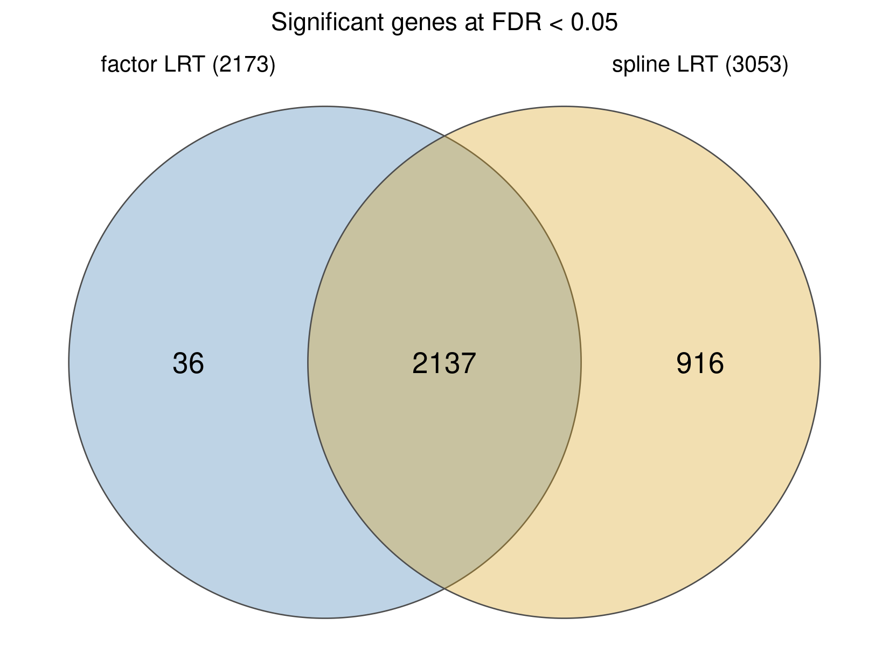
The spline LRT has no per-timepoint fold change (its coefficients are
spline basis terms), so both lists are ranked by
max_abs_lfc — the largest |log2FC| vs 0 min across
timepoints from the factor model — after filtering by each test’s own
padj.
top10_by_lfc <- function(ids, padj_vec, test_name) {
d <- lrt_tab[ids, c("gene_name", "gene_type", "baseMean",
"lfc_30_vs_0", "lfc_60_vs_0", "max_abs_lfc")]
d$padj <- signif(padj_vec[ids], 3)
d$test <- test_name
head(d[order(-d$max_abs_lfc), ], 10)
}
top10 <- rbind(
top10_by_lfc(set_f, setNames(lrt_tab$padj, rownames(lrt_tab)), "factor LRT"),
top10_by_lfc(set_s, setNames(spl$padj, rownames(spl)), "spline LRT"))
write.csv(top10, file.path(out_dir, "top10_lfc_factor_vs_spline.csv"))
top10 gene_name gene_type baseMean lfc_30_vs_0
ENSG00000123358.20 NR4A1 protein_coding 860.95 5.839
ENSG00000164400.6 CSF2 protein_coding 62.39 4.189
ENSG00000205502.4 C2CD4B protein_coding 912.91 5.366
ENSG00000198535.5 C2CD4A protein_coding 193.47 3.320
ENSG00000275302.2 CCL4 protein_coding 4340.64 4.818
ENSG00000276070.5 CCL4L2 protein_coding 1492.31 3.230
ENSG00000081041.9 CXCL2 protein_coding 2475.46 4.736
ENSG00000267195.1 MIR212 miRNA 12.05 4.651
ENSG00000115607.10 IL18RAP protein_coding 23.83 4.639
ENSG00000263050.1 DPH1-AS1 lncRNA 23.06 3.893
ENSG00000293155.1 ENSG00000293155 lncRNA 21.40 18.392
ENSG00000123358.201 NR4A1 protein_coding 860.95 5.839
ENSG00000171855.7 IFNB1 protein_coding 71.56 2.159
ENSG00000164400.61 CSF2 protein_coding 62.39 4.189
ENSG00000205502.41 C2CD4B protein_coding 912.91 5.366
ENSG00000198535.51 C2CD4A protein_coding 193.47 3.320
ENSG00000275302.21 CCL4 protein_coding 4340.64 4.818
ENSG00000276070.51 CCL4L2 protein_coding 1492.31 3.230
ENSG00000081041.91 CXCL2 protein_coding 2475.46 4.736
ENSG00000267195.11 MIR212 miRNA 12.05 4.651
lfc_60_vs_0 max_abs_lfc padj test
ENSG00000123358.20 11.590 11.590 1.20e-16 factor LRT
ENSG00000164400.6 9.819 9.819 2.86e-07 factor LRT
ENSG00000205502.4 9.691 9.691 3.67e-21 factor LRT
ENSG00000198535.5 9.619 9.619 5.00e-21 factor LRT
ENSG00000275302.2 9.564 9.564 8.03e-23 factor LRT
ENSG00000276070.5 9.127 9.127 2.06e-27 factor LRT
ENSG00000081041.9 8.883 8.883 1.38e-22 factor LRT
ENSG00000267195.1 8.623 8.623 2.93e-30 factor LRT
ENSG00000115607.10 8.519 8.519 1.01e-20 factor LRT
ENSG00000263050.1 8.316 8.316 1.94e-10 factor LRT
ENSG00000293155.1 24.692 24.692 3.72e-02 spline LRT
ENSG00000123358.201 11.590 11.590 5.83e-18 spline LRT
ENSG00000171855.7 11.034 11.034 9.86e-09 spline LRT
ENSG00000164400.61 9.819 9.819 1.43e-11 spline LRT
ENSG00000205502.41 9.691 9.691 1.32e-25 spline LRT
ENSG00000198535.51 9.619 9.619 1.12e-26 spline LRT
ENSG00000275302.21 9.564 9.564 2.97e-26 spline LRT
ENSG00000276070.51 9.127 9.127 1.01e-32 spline LRT
ENSG00000081041.91 8.883 8.883 4.35e-27 spline LRT
ENSG00000267195.11 8.623 8.623 7.20e-36 spline LRTpairwise differential-expression comparisons between the six timepoints using DESeq2’s Wald test, then shrinks the log2 fold changes to make effect-size estimates more stable
For every timepoint pair, it saves a full gene-level result table, counts how many significant genes go up or down, counts how many also exceed your fold-change threshold
tps <- c(0, 5, 10, 15, 30, 60)
# generates every unique pair of timepoints
pairs <- t(combn(tps, 2))
# test specific contrasts between individual timepoints
dds_w <- nbinomWaldTest(dds, quiet = TRUE)
# full gene results for every contrast
pw_list <- list()
# one summary row per contrast
pw_summary <- list()
for (i in seq_len(nrow(pairs))) {
# gets two timepoints for the current comparison
a <- pairs[i, 1]; b <- pairs[i, 2]
nm <- paste0("t", b, "_vs_t", a)
# extracts the wald result test for b min - a min
## is the expression at b min different from expression at a min?
## positive LFC = higher expression at later timepoint b
r <- results(dds_w,
contrast = c("time_f", as.character(b), as.character(a)))
# log2 fold change shrinkage
## pulls uncertain LFC estimates toward zero
r <- lfcShrink(dds_w,
contrast = c("time_f", as.character(b), as.character(a)),
res = r,
type = "ashr", quiet = TRUE)
d <- data.frame(gene_id = rownames(r),
gene_name = ann[rownames(r), "gene_name"],
gene_type = ann[rownames(r), "gene_type"],
baseMean = round(r$baseMean, 2),
log2FoldChange = round(r$log2FoldChange, 3),
lfcSE = round(r$lfcSE, 3),
pvalue = r$pvalue, padj = r$padj,
contrast = nm,
# unscaled timepoints (minutes) for this contrast
t_num = b, t_ref = a,
row.names = NULL, stringsAsFactors = FALSE)
d <- d[order(d$padj), ]
write.csv(d, file.path(out_dir, paste0("pairwise_", nm, ".csv")), row.names = FALSE)
pw_list[[nm]] <- d
# find the rows for sig genes
sig <- which(d$padj < fdr_cut)
pw_summary[[nm]] <- data.frame(
contrast = nm, t_num = b, t_ref = a,
# counts sig gens with positive LFC
n_up = sum(d$log2FoldChange[sig] > 0),
n_down = sum(d$log2FoldChange[sig] < 0),
# count all genes sig at FDR threshold, regardless of effect size
n_total_fdr = length(sig),
# count sig genes has FDR < 0.05 and lfc > 1
n_total_lfc1 = sum(d$padj < fdr_cut & abs(d$log2FoldChange) > lfc_cut, na.rm = TRUE))
}
pw_all <- do.call(rbind, pw_list)
write.csv(pw_all, file.path(out_dir, "pairwise_combined_long.csv"), row.names = FALSE)
pw_sum <- do.call(rbind, pw_summary)
write.csv(pw_sum, file.path(out_dir, "pairwise_summary.csv"), row.names = FALSE)
pw_sum contrast t_num t_ref n_up n_down n_total_fdr n_total_lfc1
t5_vs_t0 t5_vs_t0 5 0 0 0 0 0
t10_vs_t0 t10_vs_t0 10 0 0 0 0 0
t15_vs_t0 t15_vs_t0 15 0 0 0 0 0
t30_vs_t0 t30_vs_t0 30 0 21 0 21 9
t60_vs_t0 t60_vs_t0 60 0 1769 1440 3209 673
t10_vs_t5 t10_vs_t5 10 5 0 1 1 1
t15_vs_t5 t15_vs_t5 15 5 0 0 0 0
t30_vs_t5 t30_vs_t5 30 5 0 0 0 0
t60_vs_t5 t60_vs_t5 60 5 1563 1364 2927 682
t15_vs_t10 t15_vs_t10 15 10 1 1 2 1
t30_vs_t10 t30_vs_t10 30 10 1 0 1 1
t60_vs_t10 t60_vs_t10 60 10 1492 1033 2525 580
t30_vs_t15 t30_vs_t15 30 15 0 0 0 0
t60_vs_t15 t60_vs_t15 60 15 1312 1087 2399 551
t60_vs_t30 t60_vs_t30 60 30 1120 894 2014 332head(pw_all[pw_all$gene_type == "protein_coding", ]) gene_id gene_name gene_type baseMean log2FoldChange
t5_vs_t0.22 ENSG00000187634.13 SAMD11 protein_coding 167.74 0
t5_vs_t0.23 ENSG00000188976.11 NOC2L protein_coding 5321.10 0
t5_vs_t0.24 ENSG00000187961.15 KLHL17 protein_coding 1169.75 0
t5_vs_t0.25 ENSG00000187583.11 PLEKHN1 protein_coding 249.79 0
t5_vs_t0.27 ENSG00000188290.11 HES4 protein_coding 56.12 0
t5_vs_t0.28 ENSG00000187608.10 ISG15 protein_coding 1003.45 0
lfcSE pvalue padj contrast t_num t_ref
t5_vs_t0.22 0.004 0.1336754 1 t5_vs_t0 5 0
t5_vs_t0.23 0.004 0.9817951 1 t5_vs_t0 5 0
t5_vs_t0.24 0.004 0.5876490 1 t5_vs_t0 5 0
t5_vs_t0.25 0.004 0.3261097 1 t5_vs_t0 5 0
t5_vs_t0.27 0.004 0.7305549 1 t5_vs_t0 5 0
t5_vs_t0.28 0.004 0.8897091 1 t5_vs_t0 5 0p_pw <- ggplot(pw_sum, aes(factor(t_ref, levels = tps), factor(t_num, levels = tps),
fill = n_total_fdr)) +
geom_tile(colour = "white") +
geom_text(aes(label = ifelse(n_total_fdr > 0, n_total_fdr, "0")), size = 2.8) +
scale_fill_viridis_c(name = "DE genes", trans = "log1p",
breaks = c(0, 10, 100, 1000)) +
labs(x = "Reference timepoint (min)", y = "Compared timepoint (min)",
title = "Differentially expressed genes per pairwise contrast",
subtitle = paste0("DESeq2 Wald, ashr-shrunk, FDR < ", fdr_cut)) +
theme_minimal(base_size = 9)
save_fig(p_pw, "pairwise_de_counts", 8, 3.6)
p_pw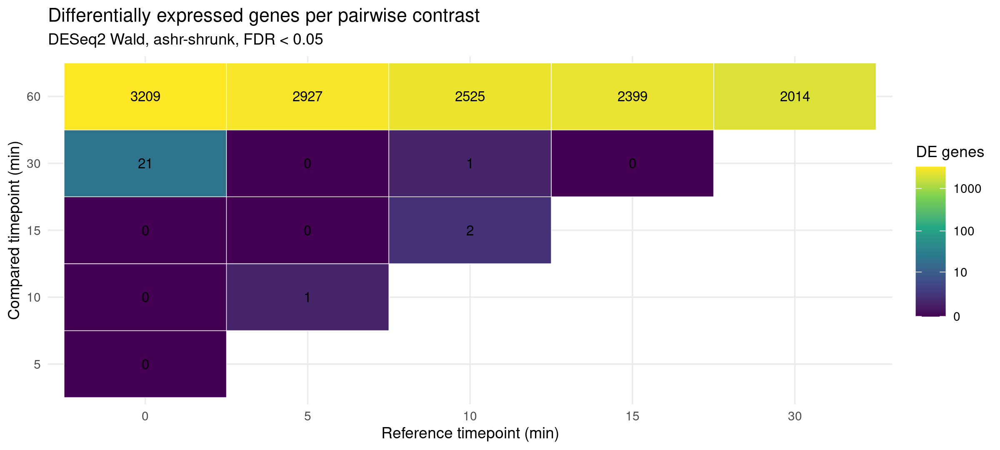
v0 <- pw_all[pw_all$contrast %in% paste0("t", tps[-1], "_vs_t0"), ]
v0$facet <- factor(v0$contrast, levels = paste0("t", tps[-1], "_vs_t0"),
labels = paste0(tps[-1], " min vs 0 min"))
v0$class <- "NS"
v0$class[!is.na(v0$padj) & v0$padj < fdr_cut] <- "FDR"
v0$class[v0$class == "FDR" & abs(v0$log2FoldChange) >= lfc_cut] <- "FDR & LFC"
v0$class <- factor(v0$class, levels = c("NS", "FDR", "FDR & LFC"))
vlab <- do.call(rbind, lapply(split(v0, v0$facet), function(d) {
d <- d[d$class == "FDR & LFC" & !is.na(d$gene_name), ]
head(d[order(d$padj), ], 10)
}))
p_volc <- ggplot(v0, aes(log2FoldChange, -log10(padj), colour = class)) +
geom_point(size = 0.4, alpha = 0.5, na.rm = TRUE) +
geom_vline(xintercept = c(-lfc_cut, lfc_cut), linetype = 3, linewidth = 0.3) +
geom_hline(yintercept = -log10(fdr_cut), linetype = 3, linewidth = 0.3) +
geom_text_repel(data = vlab, aes(label = gene_name), colour = "black", size = 2.3,
max.overlaps = Inf, segment.size = 0.2, box.padding = 0.15) +
scale_colour_manual(name = NULL,
values = c(NS = "grey75", FDR = "steelblue", `FDR & LFC` = "firebrick"),
labels = c("NS", paste("padj <", fdr_cut),
paste0("padj < ", fdr_cut, " & |LFC| >= ", lfc_cut))) +
facet_wrap(~ facet, nrow = 2) +
guides(colour = guide_legend(override.aes = list(size = 2, alpha = 1))) +
labs(x = "log2 fold change vs 0 min (ashr-shrunk)", y = "-log10 adjusted p",
title = "Volcano per timepoint vs baseline") +
theme_minimal(base_size = 9)
save_fig(p_volc, "volcano_vs_baseline", 9, 5.5)
p_volc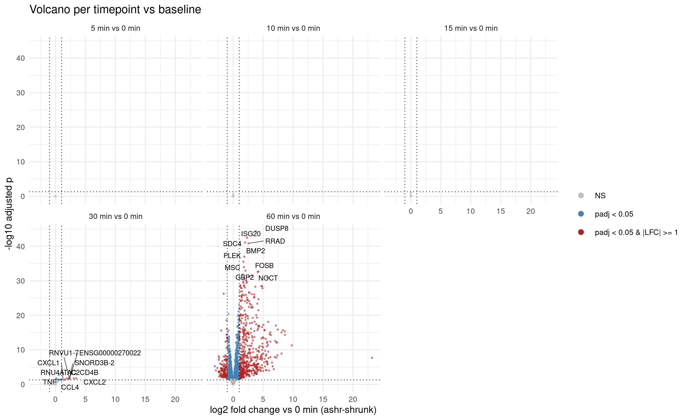
tiers are defined on evidence x effect size:
padj < 0.05 and
|log2FC| >= 1 at some timepointpadj < 0.05 but
|log2FC| < 1Takes the genes that were significant in the overall DESeq2 time-course LRT and divides them into response strength categories based on their largest absolute log2 fold change across 5, 10, 15, 30, and 60 minutes versus 0 minutes
Genes with padj < 0.05 and max_abs_lfc >= 1 are labeled core, meaning they show both statistically significant and relatively large changes; genes with padj < 0.05 but max_abs_lfc < 1 are labeled subtle
lt <- lrt_tab[!is.na(lrt_tab$padj), ]
lt$response_tier <- ifelse(lt$padj >= fdr_cut, "not_called",
ifelse(lt$max_abs_lfc >= lfc_cut, "core", "subtle"))
peak_i <- apply(lt[, paste0("lfc_", c(5,10,15,30,60), "_vs_0")], 1,
function(x) which.max(abs(x)))
lt$peak_timepoint_min <- c(5, 10, 15, 30, 60)[peak_i]
lt$direction <- ifelse(lt$lfc_60_vs_0 > 0, "up", "down")
lt$direction[lt$response_tier == "not_called"] <- ""
# fraction of the 60-min change already reached by 30 min
lt$frac_by_30 <- round(ifelse(abs(lt$lfc_60_vs_0) > 0.1,
lt$lfc_30_vs_0 / lt$lfc_60_vs_0, NA), 3)
lt$early_responder <- !is.na(lt$frac_by_30) & lt$frac_by_30 >= 0.5 &
lt$response_tier != "not_called"
resp <- lt[lt$response_tier != "not_called", ]
write.csv(resp, file.path(out_dir, "response_genes.csv"), row.names = FALSE)
table(tier = resp$response_tier, direction = resp$direction) direction
tier down up
core 179 594
subtle 692 708cat("\ntotal response genes:", nrow(resp),
"| early responders (>=50% of change by 30 min):", sum(resp$early_responder), "\n")
total response genes: 2173 | early responders (>=50% of change by 30 min): 153 lt_early <- lt[lt$early_responder == TRUE, ]
lt_early <- lt_early[order(lt_early$max_abs_lfc, decreasing = TRUE), ]
lt_early[lt_early$gene_type == "protein_coding", ] gene_id gene_name gene_type baseMean stat
ENSG00000123358.20 ENSG00000123358.20 NR4A1 protein_coding 860.95 92.777
ENSG00000205502.4 ENSG00000205502.4 C2CD4B protein_coding 912.91 114.808
ENSG00000275302.2 ENSG00000275302.2 CCL4 protein_coding 4340.64 122.870
ENSG00000081041.9 ENSG00000081041.9 CXCL2 protein_coding 2475.46 121.727
ENSG00000115607.10 ENSG00000115607.10 IL18RAP protein_coding 23.83 112.661
ENSG00000232810.5 ENSG00000232810.5 TNF protein_coding 12057.21 103.312
ENSG00000163739.5 ENSG00000163739.5 CXCL1 protein_coding 4647.94 106.045
ENSG00000144802.11 ENSG00000144802.11 NFKBIZ protein_coding 14757.32 106.663
ENSG00000120738.8 ENSG00000120738.8 EGR1 protein_coding 11254.77 71.154
ENSG00000128016.8 ENSG00000128016.8 ZFP36 protein_coding 13906.45 94.569
ENSG00000105371.10 ENSG00000105371.10 ICAM4 protein_coding 429.23 62.863
ENSG00000170345.10 ENSG00000170345.10 FOS protein_coding 8140.46 54.177
ENSG00000187556.8 ENSG00000187556.8 NANOS3 protein_coding 11.23 19.476
ENSG00000162526.7 ENSG00000162526.7 TSSK3 protein_coding 36.94 19.385
ENSG00000008517.19 ENSG00000008517.19 IL32 protein_coding 181.99 65.298
ENSG00000157423.18 ENSG00000157423.18 HYDIN protein_coding 92.13 27.094
ENSG00000090104.12 ENSG00000090104.12 RGS1 protein_coding 32927.33 25.942
ENSG00000188396.4 ENSG00000188396.4 DYNLT4 protein_coding 97.64 20.446
ENSG00000006652.15 ENSG00000006652.15 IFRD1 protein_coding 260.83 30.007
ENSG00000128917.8 ENSG00000128917.8 DLL4 protein_coding 173.61 42.084
ENSG00000137078.10 ENSG00000137078.10 SIT1 protein_coding 79.06 16.980
ENSG00000136630.13 ENSG00000136630.13 HLX protein_coding 4876.86 37.550
ENSG00000152942.19 ENSG00000152942.19 RAD17 protein_coding 620.99 16.686
ENSG00000062716.13 ENSG00000062716.13 VMP1 protein_coding 5134.35 28.535
ENSG00000115541.11 ENSG00000115541.11 HSPE1 protein_coding 416.73 20.319
ENSG00000213741.11 ENSG00000213741.11 RPS29 protein_coding 4989.60 22.087
ENSG00000144566.11 ENSG00000144566.11 RAB5A protein_coding 2612.43 19.598
ENSG00000136379.12 ENSG00000136379.12 ABHD17C protein_coding 3245.76 25.390
ENSG00000080822.17 ENSG00000080822.17 CLDND1 protein_coding 944.21 18.516
ENSG00000178719.17 ENSG00000178719.17 GRINA protein_coding 16012.19 28.102
ENSG00000145592.14 ENSG00000145592.14 RPL37 protein_coding 13205.51 17.827
ENSG00000136527.19 ENSG00000136527.19 TRA2B protein_coding 5688.13 19.166
ENSG00000142227.11 ENSG00000142227.11 EMP3 protein_coding 2152.79 18.009
ENSG00000214753.4 ENSG00000214753.4 HNRNPUL2 protein_coding 1579.35 19.002
ENSG00000119760.16 ENSG00000119760.16 SUPT7L protein_coding 1946.07 20.370
ENSG00000159200.18 ENSG00000159200.18 RCAN1 protein_coding 13646.79 17.189
pvalue padj lfc_5_vs_0 lfc_10_vs_0 lfc_15_vs_0
ENSG00000123358.20 1.752794e-18 1.202001e-16 1.900 0.426 1.901
ENSG00000205502.4 3.942197e-23 3.667827e-21 0.251 0.750 2.337
ENSG00000275302.2 7.736964e-25 8.026604e-23 0.682 0.126 1.662
ENSG00000081041.9 1.351717e-24 1.381072e-22 0.463 0.352 1.758
ENSG00000115607.10 1.122103e-22 1.013399e-20 1.383 2.623 3.693
ENSG00000232810.5 1.058355e-20 8.462654e-19 -0.018 0.240 1.663
ENSG00000163739.5 2.804830e-21 2.344699e-19 0.203 0.492 1.788
ENSG00000144802.11 2.076934e-21 1.750682e-19 0.228 0.475 1.684
ENSG00000120738.8 5.893630e-14 2.893887e-12 -0.014 0.000 0.770
ENSG00000128016.8 7.357186e-19 5.222312e-17 0.075 0.168 1.120
ENSG00000105371.10 3.107489e-12 1.329059e-10 -0.079 0.166 0.468
ENSG00000170345.10 1.927825e-10 6.854114e-09 0.017 0.165 0.544
ENSG00000187556.8 1.566426e-03 1.771313e-02 0.077 -0.726 0.432
ENSG00000162526.7 1.629090e-03 1.831934e-02 0.079 -0.599 0.063
ENSG00000008517.19 9.720813e-13 4.303108e-11 0.289 0.307 0.139
ENSG00000157423.18 5.468080e-05 8.744605e-04 0.126 0.088 0.465
ENSG00000090104.12 9.157749e-05 1.403494e-03 0.152 0.190 0.391
ENSG00000188396.4 1.030368e-03 1.223260e-02 -0.197 -0.218 0.305
ENSG00000006652.15 1.470352e-05 2.672526e-04 0.386 0.098 0.352
ENSG00000128917.8 5.665201e-08 1.480711e-06 0.188 0.143 0.092
ENSG00000137078.10 4.537804e-03 4.363108e-02 -0.524 -0.206 -0.169
ENSG00000136630.13 4.646585e-07 1.068187e-05 0.047 0.090 0.116
ENSG00000152942.19 5.135824e-03 4.810080e-02 0.214 0.033 0.214
ENSG00000062716.13 2.859646e-05 4.923459e-04 0.101 0.009 0.213
ENSG00000115541.11 1.088637e-03 1.284896e-02 0.109 0.444 0.229
ENSG00000213741.11 5.040359e-04 6.565774e-03 0.337 0.321 0.313
ENSG00000144566.11 1.486252e-03 1.689298e-02 0.124 0.112 0.140
ENSG00000136379.12 1.171255e-04 1.751256e-03 0.083 0.073 0.108
ENSG00000080822.17 2.364918e-03 2.511407e-02 0.187 0.147 0.241
ENSG00000178719.17 3.475995e-05 5.864835e-04 0.033 0.020 0.078
ENSG00000145592.14 3.170920e-03 3.225124e-02 0.177 0.183 0.252
ENSG00000136527.19 1.789613e-03 1.980518e-02 0.066 -0.051 0.091
ENSG00000142227.11 2.934895e-03 3.027686e-02 0.051 0.053 0.090
ENSG00000214753.4 1.920706e-03 2.096381e-02 -0.076 -0.024 -0.091
ENSG00000119760.16 1.064831e-03 1.259002e-02 0.133 0.046 0.147
ENSG00000159200.18 4.155770e-03 4.051626e-02 0.083 0.092 0.117
lfc_30_vs_0 lfc_60_vs_0 max_abs_lfc response_tier
ENSG00000123358.20 5.839 11.590 11.590 core
ENSG00000205502.4 5.366 9.691 9.691 core
ENSG00000275302.2 4.818 9.564 9.564 core
ENSG00000081041.9 4.736 8.883 8.883 core
ENSG00000115607.10 4.639 8.519 8.519 core
ENSG00000232810.5 4.360 7.962 7.962 core
ENSG00000163739.5 4.033 7.652 7.652 core
ENSG00000144802.11 3.469 6.675 6.675 core
ENSG00000120738.8 2.923 5.176 5.176 core
ENSG00000128016.8 2.552 5.109 5.109 core
ENSG00000105371.10 2.278 4.453 4.453 core
ENSG00000170345.10 1.943 3.448 3.448 core
ENSG00000187556.8 0.835 1.592 1.592 core
ENSG00000162526.7 -0.695 -1.352 1.352 core
ENSG00000008517.19 0.780 1.324 1.324 core
ENSG00000157423.18 0.682 1.243 1.243 core
ENSG00000090104.12 0.593 0.881 0.881 subtle
ENSG00000188396.4 0.604 0.857 0.857 subtle
ENSG00000006652.15 0.439 0.843 0.843 subtle
ENSG00000128917.8 0.506 0.808 0.808 subtle
ENSG00000137078.10 -0.491 -0.677 0.677 subtle
ENSG00000136630.13 0.293 0.557 0.557 subtle
ENSG00000152942.19 0.286 0.516 0.516 subtle
ENSG00000062716.13 0.298 0.455 0.455 subtle
ENSG00000115541.11 0.209 0.288 0.444 subtle
ENSG00000213741.11 0.410 0.420 0.420 subtle
ENSG00000144566.11 0.204 0.402 0.402 subtle
ENSG00000136379.12 0.197 0.380 0.380 subtle
ENSG00000080822.17 0.300 0.376 0.376 subtle
ENSG00000178719.17 0.167 0.317 0.317 subtle
ENSG00000145592.14 0.308 0.252 0.308 subtle
ENSG00000136527.19 0.157 0.305 0.305 subtle
ENSG00000142227.11 0.144 0.273 0.273 subtle
ENSG00000214753.4 -0.133 -0.260 0.260 subtle
ENSG00000119760.16 0.202 0.233 0.233 subtle
ENSG00000159200.18 0.232 0.223 0.232 subtle
peak_timepoint_min direction frac_by_30 early_responder
ENSG00000123358.20 60 up 0.504 TRUE
ENSG00000205502.4 60 up 0.554 TRUE
ENSG00000275302.2 60 up 0.504 TRUE
ENSG00000081041.9 60 up 0.533 TRUE
ENSG00000115607.10 60 up 0.545 TRUE
ENSG00000232810.5 60 up 0.548 TRUE
ENSG00000163739.5 60 up 0.527 TRUE
ENSG00000144802.11 60 up 0.520 TRUE
ENSG00000120738.8 60 up 0.565 TRUE
ENSG00000128016.8 60 up 0.500 TRUE
ENSG00000105371.10 60 up 0.512 TRUE
ENSG00000170345.10 60 up 0.564 TRUE
ENSG00000187556.8 60 up 0.524 TRUE
ENSG00000162526.7 60 down 0.514 TRUE
ENSG00000008517.19 60 up 0.589 TRUE
ENSG00000157423.18 60 up 0.549 TRUE
ENSG00000090104.12 60 up 0.673 TRUE
ENSG00000188396.4 60 up 0.705 TRUE
ENSG00000006652.15 60 up 0.521 TRUE
ENSG00000128917.8 60 up 0.626 TRUE
ENSG00000137078.10 60 down 0.725 TRUE
ENSG00000136630.13 60 up 0.526 TRUE
ENSG00000152942.19 60 up 0.554 TRUE
ENSG00000062716.13 60 up 0.655 TRUE
ENSG00000115541.11 10 up 0.726 TRUE
ENSG00000213741.11 60 up 0.976 TRUE
ENSG00000144566.11 60 up 0.507 TRUE
ENSG00000136379.12 60 up 0.518 TRUE
ENSG00000080822.17 60 up 0.798 TRUE
ENSG00000178719.17 60 up 0.527 TRUE
ENSG00000145592.14 30 up 1.222 TRUE
ENSG00000136527.19 60 up 0.515 TRUE
ENSG00000142227.11 60 up 0.527 TRUE
ENSG00000214753.4 60 down 0.512 TRUE
ENSG00000119760.16 60 up 0.867 TRUE
ENSG00000159200.18 30 up 1.040 TRUElooks for genes that are essentially silent at baseline but strongly induced by 60 minutes. It calculates the mean raw count across the three 0-min replicates and across the three 60-min replicates, keeps genes with mean count ≤ 1 at 0 min and ≥ 20 at 60 min, checks whether each of those genes was also called significant by the overall DESeq2 LRT, sorts them by strongest 60-min expression
t0_s <- samples$sample[samples$time == 0]
t60_s <- samples$sample[samples$time == 60]
silent <- data.frame(
gene_id = rownames(counts_f),
gene_name = ann[rownames(counts_f), "gene_name"],
mean_t0 = round(rowMeans(counts_f[, t0_s]), 1),
mean_t60 = round(rowMeans(counts_f[, t60_s]), 1),
padj = lrt_tab[rownames(counts_f), "padj"],
row.names = rownames(counts_f), stringsAsFactors = FALSE
)
silent <- silent[silent$mean_t0 <= 1 & silent$mean_t60 >= 20, ]
silent$called <- !is.na(silent$padj) & silent$padj < fdr_cut
silent <- silent[order(-silent$mean_t60), ]
write.csv(silent, file.path(out_dir, "zero_baseline_induced.csv"), row.names = FALSE)
cat("silent at baseline & induced by 60 min:", nrow(silent),
"| called by DESeq2 LRT:", sum(silent$called),
"| MISSED:", sum(!silent$called), "\n\n")silent at baseline & induced by 60 min: 21 | called by DESeq2 LRT: 15 | MISSED: 6 silent[!silent$called, ] gene_id gene_name mean_t0 mean_t60
ENSG00000007908.16 ENSG00000007908.16 SELE 0 509.0
ENSG00000171855.7 ENSG00000171855.7 IFNB1 0 369.3
ENSG00000162891.11 ENSG00000162891.11 IL20 0 88.3
ENSG00000293155.1 ENSG00000293155.1 ENSG00000293155 0 67.3
ENSG00000286076.2 ENSG00000286076.2 ENSG00000286076 0 23.3
ENSG00000285744.1 ENSG00000285744.1 MITA1 0 20.3
padj called
ENSG00000007908.16 0.43924959 FALSE
ENSG00000171855.7 0.09992589 FALSE
ENSG00000162891.11 0.68841580 FALSE
ENSG00000293155.1 0.54796840 FALSE
ENSG00000286076.2 0.76817127 FALSE
ENSG00000285744.1 0.57111655 FALSEclusters the significant genes into temporal expression-pattern
groups based on how their VST-transformed expression changes from
baseline across the six timepoints. It first averages expression across
the three replicates at each timepoint, subtracts the 0-min baseline to
get a time-course change profile, scales each gene by its own maximum
absolute change so clustering focuses on trajectory shape rather than
magnitude, performs Ward hierarchical clustering, then picks the number
of clusters k: by default the same tree is cut at every k from 2 to 10
and the k with the highest mean silhouette width (most compact,
best-separated clusters) is kept; setting k_manual to an
integer overrides this and uses that k instead. Each response gene is
assigned to one of the k clusters, the assignments are saved, and the
average expression-change profile is calculated per cluster
cluster_top_genes.csv.set.seed(1)
# For each timepoint, selects the three replicate samples and calculates the mean VST expression for every gene
tp_mean <- sapply(tps, function(t) rowMeans(vmat[, samples$sample[samples$time == t]]))
colnames(tp_mean) <- tps
# Subtracts each gene's 0-minute expression from every timepoint
delta <- tp_mean - tp_mean[, "0"]
# keep only genes that were called significant response genes by the LRT
d_resp <- delta[rownames(resp), , drop = FALSE]
# Scales each gene by its own largest absolute change
scaled <- d_resp / pmax(apply(abs(d_resp), 1, max), 1e-9)
# calculates Euclidean distance between every pair of scaled gene trajectories
dmat <- dist(scaled)
# starts with every gene as its own cluster and repeatedly merges clusters so that each merge causes the smallest possible increase in within-cluster variation
hc <- hclust(dmat, method = "ward.D2")
# choose k by mean silhouette width: cut the same tree at each candidate k and
# keep the k whose clusters are most compact and well separated
ks <- 2:10
sil <- sapply(ks, function(kk)
mean(cluster::silhouette(cutree(hc, k = kk), dmat)[, "sil_width"]))
k_sil <- ks[which.max(sil)]
# k_manual: set to an integer (e.g. 5) to override the silhouette choice;
# leave as NA (default) to use the silhouette-selected k
k_manual <- NA
k <- if (is.na(k_manual)) k_sil else k_manual
p_sil <- ggplot(data.frame(k = ks, sil = sil), aes(k, sil)) +
geom_line(linewidth = 0.4) + geom_point(size = 1.5) +
geom_point(data = data.frame(k = k_sil, sil = max(sil)), colour = "firebrick", size = 2.5) +
scale_x_continuous(breaks = ks) +
labs(x = "number of clusters k", y = "mean silhouette width",
title = paste0("Silhouette-selected k = ", k_sil,
if (!is.na(k_manual)) paste0(" (manual override: k = ", k_manual, ")") else "")) +
theme_minimal(base_size = 9)
save_fig(p_sil, "cluster_k_silhouette", 5, 3)
print(p_sil)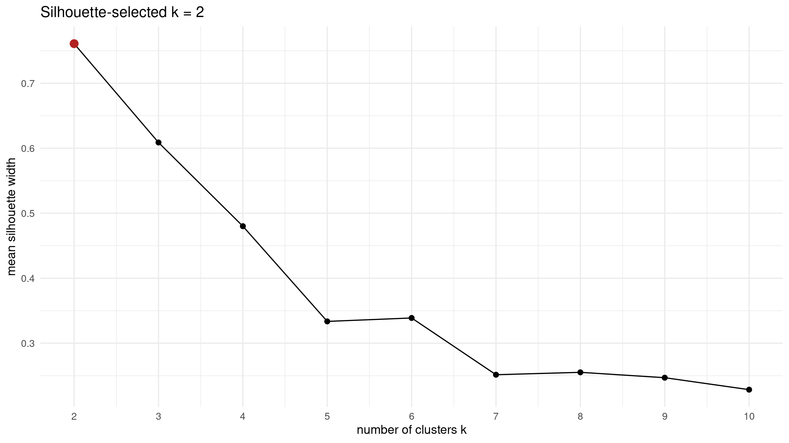
cat("using k =", k, if (is.na(k_manual)) "(silhouette)" else "(manual)", "\n")using k = 2 (silhouette) clust <- cutree(hc, k = k)
resp$cluster <- clust[rownames(resp)]
write.csv(resp, file.path(out_dir, "response_genes.csv"), row.names = FALSE)
# Calculates the average unscaled change-from-baseline for all genes in that cluster at every timepoint
cl_prof <- do.call(rbind, lapply(seq_len(k), function(i)
data.frame(cluster = i, time = tps,
mean_delta = colMeans(d_resp[clust == i, , drop = FALSE]),
n = sum(clust == i))))
write.csv(cl_prof, file.path(out_dir, "cluster_profiles.csv"), row.names = FALSE)
table(clust)clust
1 2
1304 869 Rows are z-scored VST, grouped by module (dendrogram order within each), columns grouped by timepoint
row_ord <- rownames(scaled)[hc$order]
row_ord <- row_ord[order(clust[row_ord])] # stable sort: dendrogram order kept within module
z <- t(scale(t(vmat[row_ord, samples$sample])))
z <- pmax(pmin(z, 2.5), -2.5) # clip so a few extreme genes don't set the scale
ann_col <- data.frame(time = samples$time_f, row.names = samples$sample)
ann_row <- data.frame(cluster = factor(clust[row_ord]), row.names = row_ord)
ph <- pheatmap(z, cluster_rows = FALSE, cluster_cols = FALSE,
show_rownames = FALSE, show_colnames = FALSE,
annotation_col = ann_col, annotation_row = ann_row,
gaps_col = seq(3, 15, by = 3),
gaps_row = cumsum(table(clust[row_ord]))[-k],
color = colorRampPalette(c("navy", "white", "firebrick3"))(100),
main = paste(nrow(z), "response genes (VST z-score per gene)"))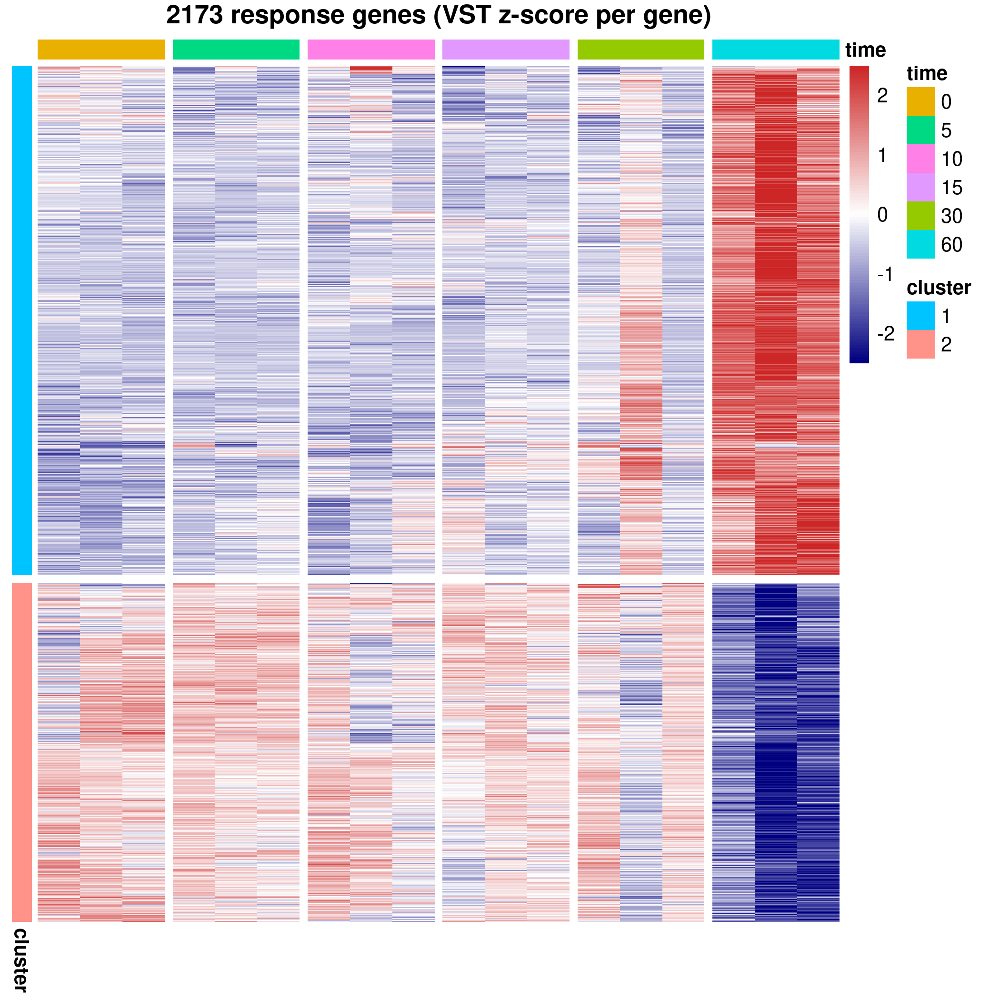
png(file.path(fig_dir, "response_gene_heatmap.png"),
width = 7, height = 7, units = "in", res = 300)
grid::grid.newpage(); grid::grid.draw(ph$gtable); dev.off()png
2 d_long <- data.frame(
gene_id = rep(rownames(d_resp), times = ncol(d_resp)),
time = rep(tps, each = nrow(d_resp)),
delta = as.vector(d_resp),
cluster = rep(clust[rownames(d_resp)], times = ncol(d_resp)))
n_lab <- 10
cl_lab <- setNames(paste0("cluster ", seq_len(k), " (n=", table(clust), ")"), seq_len(k))
module_plot <- function(ex, subtitle) {
ex_end <- data.frame(gene_name = ex$gene_name, cluster = ex$cluster,
time = 60, delta = d_resp[ex$gene_id, "60"])
ggplot(d_long, aes(time, delta, group = gene_id)) +
geom_hline(yintercept = 0, linetype = 3, linewidth = 0.3) +
geom_line(colour = "grey70", alpha = 0.2, linewidth = 0.25) +
geom_line(data = cl_prof, aes(time, mean_delta, colour = factor(cluster), group = cluster),
inherit.aes = FALSE, linewidth = 1) +
geom_line(data = d_long[d_long$gene_id %in% ex$gene_id, ],
aes(colour = factor(cluster)), linewidth = 0.35) +
geom_text_repel(data = ex_end, aes(time, delta, label = gene_name),
inherit.aes = FALSE, size = 2.2, nudge_x = 6, direction = "y",
hjust = 0, segment.size = 0.2, box.padding = 0.1,
xlim = c(62, 95), max.overlaps = Inf) +
facet_wrap(~ cluster, nrow = 1, labeller = labeller(cluster = cl_lab)) +
scale_x_continuous(breaks = c(0, 30, 60)) +
coord_cartesian(xlim = c(0, 92), clip = "off") +
labs(x = "Time after LPS (min)", y = "delta vs 0 min (VST)",
title = "Temporal response modules", subtitle = subtitle) +
theme_minimal(base_size = 9) +
theme(legend.position = "none",
plot.margin = margin(5.5, 45, 5.5, 5.5)) # room for end-of-line labels
}
ex_padj <- do.call(rbind, lapply(split(resp, resp$cluster), function(d)
head(d[order(d$padj), ], n_lab)))
p_mod <- module_plot(ex_padj,
paste0("grey: individual genes | colour: module mean and top ",
n_lab, " exemplars by LRT padj"))
save_fig(p_mod, "temporal_modules", 10, 3.4)
p_mod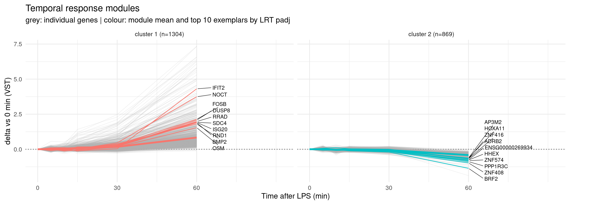
pathway enrichment separately for each temporal gene-expression cluster
suppressPackageStartupMessages({ library(fgsea); library(msigdbr) })
gs <- rbind(msigdbr(species = "Homo sapiens", collection = "H"),
msigdbr(species = "Homo sapiens", collection = "C2",
subcollection = "CP:REACTOME"))
pathways <- split(gs$gene_symbol, gs$gs_name)
# use all genes in LRT to test
universe <- unique(na.omit(lrt_tab$gene_name))
# enrichment analysis in each cluster
enr <- do.call(rbind, lapply(sort(unique(resp$cluster)), function(i) {
g <- unique(na.omit(resp$gene_name[resp$cluster == i]))
# over representation analysis
# Are genes from this pathway represented more often in this cluster than expected by chance, given the background universe?
fr <- as.data.frame(fora(pathways, genes = g, universe = universe))
fr$cluster <- i
fr$genes_in_cluster <- length(g)
fr
}))
enr$overlapGenes <- vapply(enr$overlapGenes, paste, character(1), collapse = ";")
enr <- enr[order(enr$cluster, enr$padj), ]
write.csv(enr, file.path(out_dir, "cluster_pathway_enrichment.csv"), row.names = FALSE)
enr_sig <- enr[enr$padj < fdr_cut, ]
cat("significant pathways (padj <", fdr_cut, ") per cluster:\n")significant pathways (padj < 0.05 ) per cluster:print(table(enr_sig$cluster))
1 2
99 70 # top 10 per cluster
do.call(rbind, lapply(split(enr_sig, enr_sig$cluster), function(d)
head(d[, c("cluster", "pathway", "overlap", "size", "padj")], 10))) cluster
1.1 1
1.2 1
1.3 1
1.4 1
1.5 1
1.6 1
1.7 1
1.8 1
1.9 1
1.10 1
2.1830 2
2.1831 2
2.1832 2
2.1833 2
2.1834 2
2.1835 2
2.1836 2
2.1837 2
2.1838 2
2.1839 2
pathway
1.1 HALLMARK_TNFA_SIGNALING_VIA_NFKB
1.2 HALLMARK_INFLAMMATORY_RESPONSE
1.3 REACTOME_CYTOKINE_SIGNALING_IN_IMMUNE_SYSTEM
1.4 REACTOME_INTERLEUKIN_10_SIGNALING
1.5 HALLMARK_INTERFERON_GAMMA_RESPONSE
1.6 REACTOME_SIGNALING_BY_INTERLEUKINS
1.7 HALLMARK_APOPTOSIS
1.8 HALLMARK_HYPOXIA
1.9 REACTOME_INTERLEUKIN_4_AND_INTERLEUKIN_13_SIGNALING
1.10 HALLMARK_IL2_STAT5_SIGNALING
2.1830 REACTOME_RNA_POLYMERASE_II_TRANSCRIPTION
2.1831 REACTOME_HDACS_DEACETYLATE_HISTONES
2.1832 REACTOME_SIRT1_NEGATIVELY_REGULATES_RRNA_EXPRESSION
2.1833 REACTOME_ASSEMBLY_OF_THE_ORC_COMPLEX_AT_THE_ORIGIN_OF_REPLICATION
2.1834 REACTOME_DNA_METHYLATION
2.1835 REACTOME_RNA_POLYMERASE_I_PROMOTER_ESCAPE
2.1836 REACTOME_ACTIVATED_PKN1_STIMULATES_TRANSCRIPTION_OF_AR_ANDROGEN_RECEPTOR_REGULATED_GENES_KLK2_AND_KLK3
2.1837 REACTOME_HATS_ACETYLATE_HISTONES
2.1838 REACTOME_MEIOTIC_RECOMBINATION
2.1839 REACTOME_CHROMATIN_MODIFICATIONS_DURING_THE_MATERNAL_TO_ZYGOTIC_TRANSITION_MZT
overlap size padj
1.1 173 198 2.793462e-177
1.2 90 177 2.025421e-56
1.3 116 650 2.733355e-21
1.4 27 43 2.559423e-19
1.5 51 183 5.063535e-17
1.6 74 385 4.606103e-15
1.7 42 152 7.841680e-14
1.8 45 173 7.841680e-14
1.9 30 89 3.238711e-12
1.10 40 179 5.759508e-10
2.1830 109 1225 5.139789e-10
2.1831 22 88 1.283809e-08
2.1832 17 62 3.706828e-07
2.1833 17 63 3.706828e-07
2.1834 16 58 6.153421e-07
2.1835 19 84 6.153421e-07
2.1836 16 59 6.153421e-07
2.1837 24 135 7.232263e-07
2.1838 18 79 9.505770e-07
2.1839 16 62 9.505770e-07top_enr <- do.call(rbind, lapply(split(enr_sig, enr_sig$cluster), function(d)
head(d[order(d$padj), ], 10)))
top_enr$pathway <- gsub("^HALLMARK_|^REACTOME_", "", top_enr$pathway)
top_enr$pathway <- gsub("_", " ", tolower(top_enr$pathway))
# same pathway can appear in several clusters; order bars by significance within facet
top_enr$path_f <- factor(paste(top_enr$cluster, top_enr$pathway),
levels = rev(paste(top_enr$cluster, top_enr$pathway)))
# strip the cluster prefix, then wrap long pathway names onto multiple lines
wrap_lab <- function(x) vapply(sub("^\\S+ ", "", x), function(s)
paste(strwrap(s, width = 32), collapse = "\n"), character(1), USE.NAMES = FALSE)
p_enr <- ggplot(top_enr, aes(-log10(padj), path_f, fill = overlap / size)) +
geom_col() +
geom_vline(xintercept = -log10(fdr_cut), linetype = 3, linewidth = 0.3) +
scale_y_discrete(labels = wrap_lab) +
scale_x_continuous(expand = expansion(mult = c(0, 0.05))) +
scale_fill_viridis_c(name = "gene ratio\n(overlap/set size)") +
facet_wrap(~ cluster, scales = "free_y", ncol = 2,
labeller = labeller(cluster = cl_lab)) +
labs(x = "-log10 adjusted p", y = NULL,
title = "Top enriched pathways per temporal cluster",
subtitle = "Hallmark + Reactome, Fisher ORA vs all LRT-tested genes") +
theme_minimal(base_size = 8.5) +
theme(axis.text.y = element_text(size = 6.5, lineheight = 0.85))
save_fig(p_enr, "cluster_pathway_enrichment", 11, 6.5)
p_enr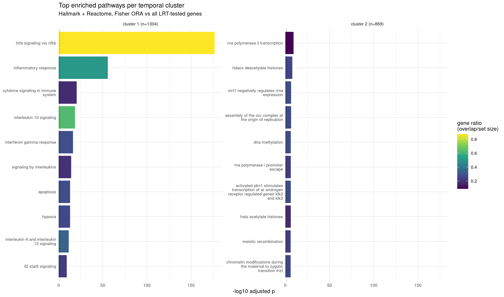
temporal expression profile for top 10 genes ranked by LFC
ex_lfc <- do.call(rbind, lapply(split(resp, resp$cluster), function(d)
head(d[order(-d$max_abs_lfc), ], n_lab)))
p_mod_lfc <- module_plot(ex_lfc,
paste0("grey: individual genes | colour: module mean and top ",
n_lab, " exemplars by |log2FC|"))
save_fig(p_mod_lfc, "temporal_modules_lfc_labels", 10, 3.4)
p_mod_lfc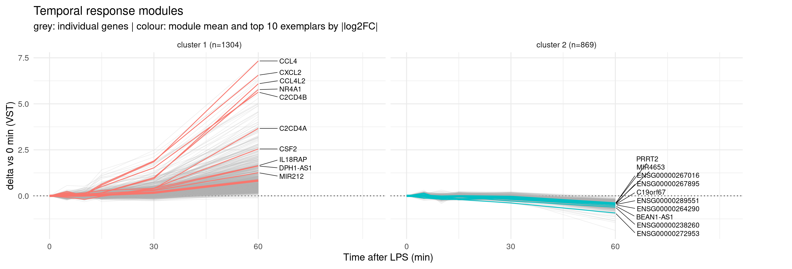
top_by_cluster <- do.call(rbind, lapply(split(resp, resp$cluster), function(d)
head(d[order(d$padj), c("gene_name", "cluster", "response_tier", "direction",
"peak_timepoint_min", "max_abs_lfc", "padj")], 10)))
write.csv(top_by_cluster, file.path(out_dir, "cluster_top_genes.csv"), row.names = FALSE)
top_by_cluster gene_name cluster response_tier direction
1.ENSG00000184545.11 DUSP8 1 core up
1.ENSG00000166592.13 RRAD 1 core up
1.ENSG00000172183.16 ISG20 1 core up
1.ENSG00000099985.4 OSM 1 core up
1.ENSG00000124145.6 SDC4 1 core up
1.ENSG00000172602.11 RND1 1 core up
1.ENSG00000151014.6 NOCT 1 core up
1.ENSG00000125740.15 FOSB 1 core up
1.ENSG00000119922.11 IFIT2 1 core up
1.ENSG00000125845.7 BMP2 1 core up
2.ENSG00000104221.14 BRF2 2 core down
2.ENSG00000169252.6 ADRB2 2 subtle down
2.ENSG00000175213.3 ZNF408 2 core down
2.ENSG00000005073.6 HOXA11 2 subtle down
2.ENSG00000269934.3 ENSG00000269934 2 core down
2.ENSG00000119938.9 PPP1R3C 2 core down
2.ENSG00000070718.13 AP3M2 2 subtle down
2.ENSG00000105732.13 ZNF574 2 subtle down
2.ENSG00000083817.9 ZNF416 2 subtle down
2.ENSG00000152804.11 HHEX 2 subtle down
peak_timepoint_min max_abs_lfc padj
1.ENSG00000184545.11 60 3.798 8.734431e-101
1.ENSG00000166592.13 60 2.588 9.231954e-92
1.ENSG00000172183.16 60 2.324 1.789787e-82
1.ENSG00000099985.4 60 3.272 4.344160e-81
1.ENSG00000124145.6 60 1.982 4.342695e-80
1.ENSG00000172602.11 60 4.978 1.222805e-75
1.ENSG00000151014.6 60 4.142 7.270414e-74
1.ENSG00000125740.15 60 4.243 6.367464e-73
1.ENSG00000119922.11 60 5.829 1.270524e-72
1.ENSG00000125845.7 60 1.880 1.503098e-71
2.ENSG00000104221.14 60 1.611 5.299266e-30
2.ENSG00000169252.6 60 0.800 9.825083e-29
2.ENSG00000175213.3 60 1.138 1.535786e-21
2.ENSG00000005073.6 60 0.766 3.371347e-19
2.ENSG00000269934.3 60 1.076 1.040868e-18
2.ENSG00000119938.9 60 2.060 1.571422e-18
2.ENSG00000070718.13 60 0.704 1.916399e-17
2.ENSG00000105732.13 60 0.920 2.331814e-17
2.ENSG00000083817.9 60 0.939 1.343994e-16
2.ENSG00000152804.11 60 0.942 1.728199e-1610 most statistically significant response genes by LRT LFC
top_ids <- rownames(resp)[order(resp$max_abs_lfc, decreasing = TRUE)][1:10]
traj <- do.call(rbind, lapply(top_ids, function(g)
data.frame(
gene_name = resp[g, "gene_name"],
sample = samples$sample,
time = samples$time,
rep = samples$rep,
vst = vmat[g, samples$sample]
)))
traj$gene_name <- factor(traj$gene_name, levels = unique(traj$gene_name))
p_traj <- ggplot(traj, aes(time, vst, colour = rep)) +
geom_line(linewidth = 0.4) +
geom_point(size = 1) +
facet_wrap(~ gene_name, nrow = 2, scales = "free_y") +
scale_x_continuous(breaks = c(0, 15, 30, 60)) +
labs(
x = "Time after LPS (min)",
y = "VST expression",
colour = "replicate",
title = "Top 10 response genes by maximum |log2FC|"
) +
theme_minimal(base_size = 9)
save_fig(p_traj, "top_gene_trajectories_by_lfc", 9, 4.5)
p_traj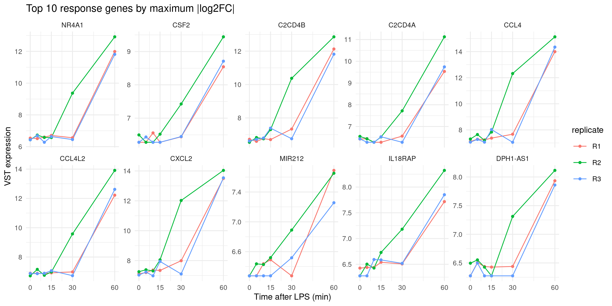
The whole LRT is dominated by the 60-min response
does anything change between 0 and 15 min?
early_tps <- c(0, 5, 10, 15)
se <- samples[samples$time %in% early_tps, ]
se$time_f <- factor(se$time, levels = early_tps)
se$rep <- factor(se$replicate)
se$time15 <- se$time / 15 # time rescaled to 0..1 for the smooth-trend spline
ce <- counts[, se$sample]
keep_e <- filterByExpr(DGEList(ce, samples = se), design = model.matrix(~ rep + time_f, se))
ce_f <- ce[keep_e, ]
cat("early window:", ncol(ce_f), "libraries |", nrow(ce_f), "of", nrow(ce), "genes kept\n")early window: 12 libraries | 20309 of 63086 genes keptdds_e <- DESeqDataSetFromMatrix(ce_f, colData = se, design = ~ rep + time_f)
dds_e <- DESeq(dds_e, test = "LRT", reduced = ~ rep, quiet = TRUE)
res_e <- results(dds_e)
lfc_e <- sapply(early_tps[-1], function(t)
results(dds_e, name = paste0("time_f_", t, "_vs_0"))$log2FoldChange)
colnames(lfc_e) <- paste0("lfc_", early_tps[-1], "_vs_0")
early_tab <- data.frame(
gene_id = rownames(res_e),
gene_name = ann[rownames(res_e), "gene_name"],
gene_type = ann[rownames(res_e), "gene_type"],
baseMean = round(res_e$baseMean, 2),
pvalue = res_e$pvalue, padj = res_e$padj, round(lfc_e, 3),
max_abs_lfc = round(apply(abs(lfc_e), 1, max), 3),
row.names = rownames(res_e), stringsAsFactors = FALSE)
early_tab <- early_tab[order(early_tab$padj), ]
write.csv(early_tab, file.path(out_dir, "early_0_15_lrt.csv"), row.names = FALSE)
cat("factor LRT, FDR <", fdr_cut, ":", sum(early_tab$padj < fdr_cut, na.rm = TRUE), "genes\n")factor LRT, FDR < 0.05 : 3 geneshead(early_tab[, c("gene_name", "baseMean", "lfc_5_vs_0", "lfc_10_vs_0",
"lfc_15_vs_0", "padj")], 15) gene_name baseMean lfc_5_vs_0 lfc_10_vs_0
ENSG00000275894.1 ENSG00000275894 45.01 -0.017 1.000
ENSG00000081041.9 CXCL2 52.35 0.444 0.325
ENSG00000275302.2 CCL4 53.21 0.722 0.040
ENSG00000206652.1 RNU1-1 51.90 0.186 0.949
ENSG00000115009.13 CCL20 659.67 0.313 0.248
ENSG00000090104.12 RGS1 29793.86 0.153 0.191
ENSG00000265185.6 SNORD3B-1 72.93 0.246 0.921
ENSG00000188452.15 CERKL 88.36 0.014 0.290
ENSG00000144802.11 NFKBIZ 1286.22 0.219 0.441
ENSG00000271614.1 ATP2B1-AS1 209.17 -0.177 0.306
ENSG00000276168.1 RN7SL1 2595203.69 0.231 0.446
ENSG00000185567.7 AHNAK2 3025.10 -0.269 0.141
ENSG00000118503.18 TNFAIP3 8471.45 0.110 0.043
ENSG00000261504.1 LINC01686 133.37 0.171 0.516
ENSG00000235903.11 CPB2-AS1 178.37 0.003 0.077
lfc_15_vs_0 padj
ENSG00000275894.1 2.299 0.0001481479
ENSG00000081041.9 1.748 0.0205222252
ENSG00000275302.2 1.582 0.0238118434
ENSG00000206652.1 1.395 0.0667694231
ENSG00000115009.13 0.608 0.0905082482
ENSG00000090104.12 0.396 0.1252220501
ENSG00000265185.6 1.474 0.1252220501
ENSG00000188452.15 -0.751 0.5275353756
ENSG00000144802.11 1.738 0.5275353756
ENSG00000271614.1 0.548 0.5305794310
ENSG00000276168.1 0.322 0.5305794310
ENSG00000185567.7 -0.235 0.6248717738
ENSG00000118503.18 0.311 0.6773490483
ENSG00000261504.1 1.009 0.8536976907
ENSG00000235903.11 -0.556 0.8536976907models expression as a nonlinear smooth trajectory of continuous time from 0 to 15 min, using a natural spline with 2 degrees of freedom
dds_l <- DESeqDataSetFromMatrix(ce_f, colData = se,
design = ~ rep + ns(time15, df = 2))
dds_l <- DESeq(dds_l, test = "LRT", reduced = ~ rep, quiet = TRUE)
res_l <- results(dds_l)
# spline coefficients have no single interpretable slope, so report the factor
# model's 15-vs-0 log2FC alongside the smooth-trend test's p-values
trend_tab <- data.frame(
gene_id = rownames(res_l),
gene_name = ann[rownames(res_l), "gene_name"],
baseMean = round(res_l$baseMean, 2),
lfc_15_vs_0 = early_tab[rownames(res_l), "lfc_15_vs_0"],
pvalue = res_l$pvalue, padj = res_l$padj,
row.names = rownames(res_l), stringsAsFactors = FALSE)
trend_tab <- trend_tab[order(trend_tab$padj), ]
write.csv(trend_tab, file.path(out_dir, "early_0_15_smooth_trend.csv"), row.names = FALSE)
cat("smooth-trend LRT, FDR <", fdr_cut, ":",
sum(trend_tab$padj < fdr_cut, na.rm = TRUE), "genes\n")smooth-trend LRT, FDR < 0.05 : 4 geneshead(trend_tab[, c("gene_name", "baseMean", "lfc_15_vs_0", "padj")], 15) gene_name baseMean lfc_15_vs_0 padj
ENSG00000275894.1 ENSG00000275894 45.01 2.299 7.008712e-06
ENSG00000206652.1 RNU1-1 51.90 1.395 1.690743e-02
ENSG00000081041.9 CXCL2 52.35 1.748 2.559271e-02
ENSG00000265185.6 SNORD3B-1 72.93 1.474 2.606428e-02
ENSG00000090104.12 RGS1 29793.86 0.396 8.800064e-02
ENSG00000144802.11 NFKBIZ 1286.22 1.738 1.620991e-01
ENSG00000261504.1 LINC01686 133.37 1.009 2.793837e-01
ENSG00000205502.4 C2CD4B 14.14 2.457 2.793837e-01
ENSG00000200087.1 SNORA73B 1515.20 0.561 2.892841e-01
ENSG00000115009.13 CCL20 659.67 0.608 2.892841e-01
ENSG00000276168.1 RN7SL1 2595203.69 0.322 2.892841e-01
ENSG00000163739.5 CXCL1 219.04 1.830 3.042513e-01
ENSG00000277027.1 RMRP 136480.80 0.453 4.475581e-01
ENSG00000271614.1 ATP2B1-AS1 209.17 0.548 4.475581e-01
ENSG00000278771.1 RN7SL3 15345.79 0.354 4.475581e-01sig_f <- rownames(early_tab)[which(early_tab$padj < fdr_cut)]
sig_l <- rownames(trend_tab)[which(trend_tab$padj < fdr_cut)]
early_ids <- union(sig_f, sig_l)
early_hits <- data.frame(
early_tab[early_ids, c("gene_name", "gene_type", "baseMean",
"lfc_5_vs_0", "lfc_10_vs_0", "lfc_15_vs_0")],
padj_factor = signif(early_tab[early_ids, "padj"], 3),
padj_trend = signif(trend_tab[early_ids, "padj"], 3),
padj_full_course = signif(lrt_tab[early_ids, "padj"], 3),
row.names = early_ids)
early_hits <- early_hits[order(pmin(early_hits$padj_factor, early_hits$padj_trend)), ]
write.csv(early_hits, file.path(out_dir, "early_response_genes.csv"), row.names = FALSE)
cat("factor:", length(sig_f), "| trend:", length(sig_l),
"| union:", length(early_ids), "| both:", length(intersect(sig_f, sig_l)), "\n")factor: 3 | trend: 4 | union: 5 | both: 2 early_hits gene_name gene_type baseMean lfc_5_vs_0
ENSG00000275894.1 ENSG00000275894 lncRNA 45.01 -0.017
ENSG00000206652.1 RNU1-1 snRNA 51.90 0.186
ENSG00000081041.9 CXCL2 protein_coding 52.35 0.444
ENSG00000275302.2 CCL4 protein_coding 53.21 0.722
ENSG00000265185.6 SNORD3B-1 snoRNA 72.93 0.246
lfc_10_vs_0 lfc_15_vs_0 padj_factor padj_trend
ENSG00000275894.1 1.000 2.299 0.000148 7.01e-06
ENSG00000206652.1 0.949 1.395 0.066800 1.69e-02
ENSG00000081041.9 0.325 1.748 0.020500 2.56e-02
ENSG00000275302.2 0.040 1.582 0.023800 9.90e-01
ENSG00000265185.6 0.921 1.474 0.125000 2.61e-02
padj_full_course
ENSG00000275894.1 1.25e-12
ENSG00000206652.1 1.86e-10
ENSG00000081041.9 1.38e-22
ENSG00000275302.2 8.03e-23
ENSG00000265185.6 1.06e-10ev <- early_tab
ev$class <- ifelse(!is.na(ev$padj) & ev$padj < fdr_cut, "FDR < 0.05", "NS")
p_ev <- ggplot(ev, aes(lfc_15_vs_0, -log10(padj), colour = class)) +
geom_point(size = 0.5, alpha = 0.5, na.rm = TRUE) +
geom_hline(yintercept = -log10(fdr_cut), linetype = 3, linewidth = 0.3) +
geom_text_repel(data = head(ev[order(ev$padj), ], 10), aes(label = gene_name),
colour = "black", size = 2.4, max.overlaps = Inf,
segment.size = 0.2, box.padding = 0.2) +
scale_colour_manual(name = NULL, values = c(`FDR < 0.05` = "firebrick", NS = "grey75")) +
guides(colour = guide_legend(override.aes = list(size = 2, alpha = 1))) +
labs(x = "log2 fold change, 15 min vs 0 min", y = "-log10 adjusted p (early LRT)",
title = "Early window (0-15 min) LRT") +
theme_minimal(base_size = 9)
save_fig(p_ev, "early_volcano_0_15", 5.5, 4.5)
p_ev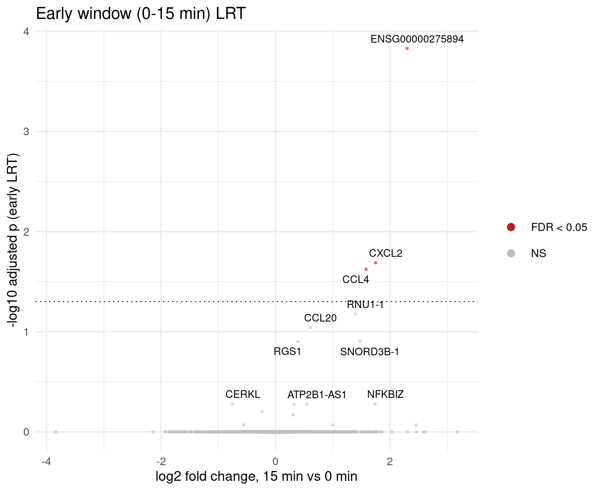
For knwon early response genes, extract their LFC at each time point and identify if the gene is sigificant by LRT
canon <- c("TNF","NFKBIA","NFKBIZ","CXCL8","IL1B","CCL4","CCL3","CXCL1","CXCL2","CXCL3",
"EGR1","FOS","FOSB","JUNB","TNFAIP3","IER3","DUSP1","DUSP2","PTGS2","SOD2",
"NR4A1","CSF2","CCL20","RGS1")
cn_ids <- rownames(early_tab)[match(canon, early_tab$gene_name)]
cn_ids <- cn_ids[!is.na(cn_ids)]
cn <- do.call(rbind, lapply(early_tps[-1], function(t)
data.frame(gene_name = early_tab[cn_ids, "gene_name"], time = t,
lfc = early_tab[cn_ids, paste0("lfc_", t, "_vs_0")],
padj = early_tab[cn_ids, "padj"])))
cn$gene_name <- factor(cn$gene_name,
levels = early_tab[cn_ids, "gene_name"][
order(early_tab[cn_ids, "lfc_15_vs_0"])])
cn$called <- ifelse(!is.na(cn$padj) & cn$padj < fdr_cut, "FDR < 0.05", "not called")
p_cn <- ggplot(cn, aes(factor(time), gene_name, fill = lfc)) +
geom_tile(colour = "white") +
geom_text(aes(label = sprintf("%.1f", lfc)), size = 2.1) +
geom_point(data = cn[cn$called == "FDR < 0.05" & cn$time == 15, ],
aes(x = 3.65), shape = 8, size = 1.4, inherit.aes = TRUE, show.legend = FALSE) +
scale_fill_gradient2(name = "log2FC", low = "navy", mid = "white", high = "firebrick3") +
coord_cartesian(xlim = c(1, 3.8), clip = "off") +
labs(x = "Time after LPS (min)", y = NULL,
title = "Canonical LPS targets at 0-15 min ",
subtitle = "log2FC vs 0 min | * = called at FDR < 0.05 by the early LRT") +
theme_minimal(base_size = 9)
save_fig(p_cn, "early_canonical_lfc", 6.5, 4.5)
p_cn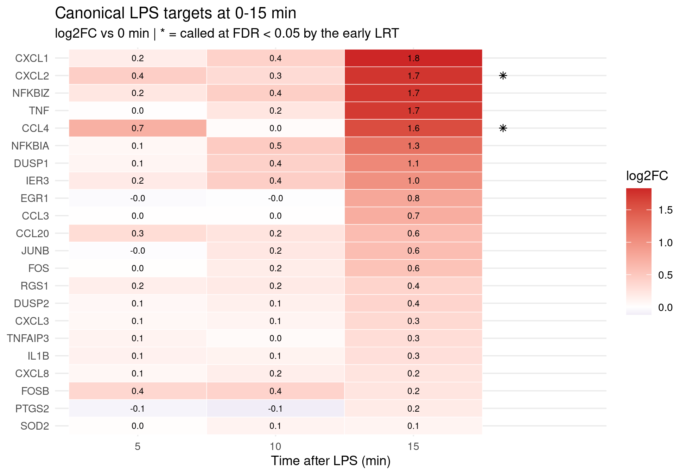
show_ids <- unique(c(early_ids, rownames(early_tab)[match(
c("TNF", "NFKBIA", "DUSP1", "IER3"), early_tab$gene_name)]))
show_ids <- show_ids[!is.na(show_ids)]
etraj <- do.call(rbind, lapply(show_ids, function(g)
data.frame(gene_name = early_tab[g, "gene_name"], time = se$time, rep = se$rep,
vst = vmat[g, se$sample])))
etraj$gene_name <- factor(etraj$gene_name, levels = unique(etraj$gene_name))
p_etraj <- ggplot(etraj, aes(time, vst, colour = rep)) +
geom_line(linewidth = 0.4) + geom_point(size = 1) +
facet_wrap(~ gene_name, nrow = 2, scales = "free_y") +
scale_x_continuous(breaks = early_tps) +
labs(x = "Time after LPS (min)", y = "VST expression", colour = "replicate",
title = "Early responders, per replicate (0-15 min)") +
theme_minimal(base_size = 9)
save_fig(p_etraj, "early_trajectories", 9, 4.5)
p_etraj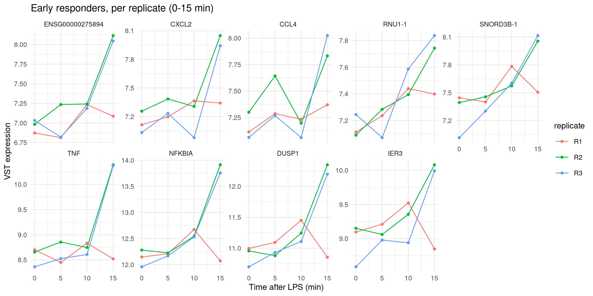
sessionInfo()R version 4.4.1 (2024-06-14)
Platform: x86_64-pc-linux-gnu
Running under: Red Hat Enterprise Linux 8.10 (Ootpa)
Matrix products: default
BLAS/LAPACK: /software/openblas-0.3.29-el8-x86_64/lib/libopenblas_skylakexp-r0.3.29.so; LAPACK version 3.12.0
locale:
[1] LC_CTYPE=C.UTF-8 LC_NUMERIC=C LC_TIME=C.UTF-8
[4] LC_COLLATE=C.UTF-8 LC_MONETARY=C.UTF-8 LC_MESSAGES=C.UTF-8
[7] LC_PAPER=C.UTF-8 LC_NAME=C LC_ADDRESS=C
[10] LC_TELEPHONE=C LC_MEASUREMENT=C.UTF-8 LC_IDENTIFICATION=C
time zone: America/Chicago
tzcode source: system (glibc)
attached base packages:
[1] splines stats4 stats graphics grDevices utils datasets
[8] methods base
other attached packages:
[1] msigdbr_25.1.0 fgsea_1.32.4
[3] ggforce_0.5.0 pheatmap_1.0.13
[5] ggrepel_0.9.6 ggplot2_4.0.3
[7] edgeR_4.4.2 limma_3.62.2
[9] DESeq2_1.46.0 SummarizedExperiment_1.36.0
[11] Biobase_2.66.0 MatrixGenerics_1.18.1
[13] matrixStats_1.5.0 GenomicRanges_1.58.0
[15] GenomeInfoDb_1.42.3 IRanges_2.40.1
[17] S4Vectors_0.44.0 BiocGenerics_0.52.0
[19] workflowr_1.7.2
loaded via a namespace (and not attached):
[1] rlang_1.2.0 magrittr_2.0.5 git2r_0.36.2
[4] otel_0.2.0 compiler_4.4.1 getPass_0.2-4
[7] systemfonts_1.2.3 callr_3.7.6 vctrs_0.7.3
[10] stringr_1.6.0 pkgconfig_2.0.3 crayon_1.5.3
[13] fastmap_1.2.0 XVector_0.46.0 labeling_0.4.3
[16] promises_1.5.0 rmarkdown_2.29 UCSC.utils_1.2.0
[19] ps_1.9.1 ragg_1.4.0 xfun_0.57
[22] zlibbioc_1.52.0 cachem_1.1.0 jsonlite_2.0.0
[25] later_1.4.8 DelayedArray_0.32.0 BiocParallel_1.40.2
[28] tweenr_2.0.3 irlba_2.3.5.1 parallel_4.4.1
[31] cluster_2.1.8.3 R6_2.6.1 bslib_0.9.0
[34] stringi_1.8.7 RColorBrewer_1.1-3 SQUAREM_2021.1
[37] jquerylib_0.1.4 assertthat_0.2.1 Rcpp_1.1.2
[40] knitr_1.50 httpuv_1.6.16 Matrix_1.7-3
[43] tidyselect_1.2.1 rstudioapi_0.17.1 dichromat_2.0-1
[46] abind_1.4-8 yaml_2.3.12 codetools_0.2-20
[49] curl_7.1.0 processx_3.8.6 lattice_0.23-1
[52] tibble_3.3.1 withr_3.0.2 S7_0.2.2
[55] evaluate_1.0.5 polyclip_1.10-7 pillar_1.11.1
[58] whisker_0.4.1 generics_0.1.4 rprojroot_2.1.1
[61] invgamma_1.2 truncnorm_1.0-9 scales_1.4.0
[64] ashr_2.2-63 glue_1.8.1 tools_4.4.1
[67] data.table_1.18.4 locfit_1.5-9.12 babelgene_22.9
[70] fs_1.6.6 fastmatch_1.1-6 cowplot_1.2.0
[73] grid_4.4.1 GenomeInfoDbData_1.2.13 cli_3.6.6
[76] textshaping_1.0.1 mixsqp_0.3-54 S4Arrays_1.6.0
[79] viridisLite_0.4.3 dplyr_1.2.1 gtable_0.3.6
[82] sass_0.4.10 digest_0.6.39 SparseArray_1.6.2
[85] farver_2.1.2 htmltools_0.5.8.1 lifecycle_1.0.5
[88] httr_1.4.8 statmod_1.5.0 MASS_7.3-65
sessionInfo()R version 4.4.1 (2024-06-14)
Platform: x86_64-pc-linux-gnu
Running under: Red Hat Enterprise Linux 8.10 (Ootpa)
Matrix products: default
BLAS/LAPACK: /software/openblas-0.3.29-el8-x86_64/lib/libopenblas_skylakexp-r0.3.29.so; LAPACK version 3.12.0
locale:
[1] LC_CTYPE=C.UTF-8 LC_NUMERIC=C LC_TIME=C.UTF-8
[4] LC_COLLATE=C.UTF-8 LC_MONETARY=C.UTF-8 LC_MESSAGES=C.UTF-8
[7] LC_PAPER=C.UTF-8 LC_NAME=C LC_ADDRESS=C
[10] LC_TELEPHONE=C LC_MEASUREMENT=C.UTF-8 LC_IDENTIFICATION=C
time zone: America/Chicago
tzcode source: system (glibc)
attached base packages:
[1] splines stats4 stats graphics grDevices utils datasets
[8] methods base
other attached packages:
[1] msigdbr_25.1.0 fgsea_1.32.4
[3] ggforce_0.5.0 pheatmap_1.0.13
[5] ggrepel_0.9.6 ggplot2_4.0.3
[7] edgeR_4.4.2 limma_3.62.2
[9] DESeq2_1.46.0 SummarizedExperiment_1.36.0
[11] Biobase_2.66.0 MatrixGenerics_1.18.1
[13] matrixStats_1.5.0 GenomicRanges_1.58.0
[15] GenomeInfoDb_1.42.3 IRanges_2.40.1
[17] S4Vectors_0.44.0 BiocGenerics_0.52.0
[19] workflowr_1.7.2
loaded via a namespace (and not attached):
[1] rlang_1.2.0 magrittr_2.0.5 git2r_0.36.2
[4] otel_0.2.0 compiler_4.4.1 getPass_0.2-4
[7] systemfonts_1.2.3 callr_3.7.6 vctrs_0.7.3
[10] stringr_1.6.0 pkgconfig_2.0.3 crayon_1.5.3
[13] fastmap_1.2.0 XVector_0.46.0 labeling_0.4.3
[16] promises_1.5.0 rmarkdown_2.29 UCSC.utils_1.2.0
[19] ps_1.9.1 ragg_1.4.0 xfun_0.57
[22] zlibbioc_1.52.0 cachem_1.1.0 jsonlite_2.0.0
[25] later_1.4.8 DelayedArray_0.32.0 BiocParallel_1.40.2
[28] tweenr_2.0.3 irlba_2.3.5.1 parallel_4.4.1
[31] cluster_2.1.8.3 R6_2.6.1 bslib_0.9.0
[34] stringi_1.8.7 RColorBrewer_1.1-3 SQUAREM_2021.1
[37] jquerylib_0.1.4 assertthat_0.2.1 Rcpp_1.1.2
[40] knitr_1.50 httpuv_1.6.16 Matrix_1.7-3
[43] tidyselect_1.2.1 rstudioapi_0.17.1 dichromat_2.0-1
[46] abind_1.4-8 yaml_2.3.12 codetools_0.2-20
[49] curl_7.1.0 processx_3.8.6 lattice_0.23-1
[52] tibble_3.3.1 withr_3.0.2 S7_0.2.2
[55] evaluate_1.0.5 polyclip_1.10-7 pillar_1.11.1
[58] whisker_0.4.1 generics_0.1.4 rprojroot_2.1.1
[61] invgamma_1.2 truncnorm_1.0-9 scales_1.4.0
[64] ashr_2.2-63 glue_1.8.1 tools_4.4.1
[67] data.table_1.18.4 locfit_1.5-9.12 babelgene_22.9
[70] fs_1.6.6 fastmatch_1.1-6 cowplot_1.2.0
[73] grid_4.4.1 GenomeInfoDbData_1.2.13 cli_3.6.6
[76] textshaping_1.0.1 mixsqp_0.3-54 S4Arrays_1.6.0
[79] viridisLite_0.4.3 dplyr_1.2.1 gtable_0.3.6
[82] sass_0.4.10 digest_0.6.39 SparseArray_1.6.2
[85] farver_2.1.2 htmltools_0.5.8.1 lifecycle_1.0.5
[88] httr_1.4.8 statmod_1.5.0 MASS_7.3-65